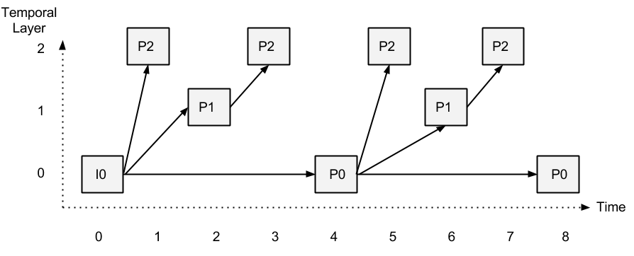
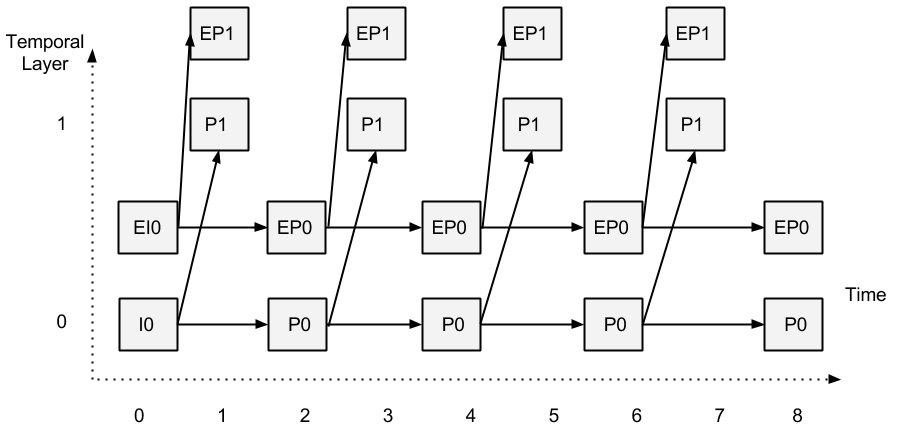
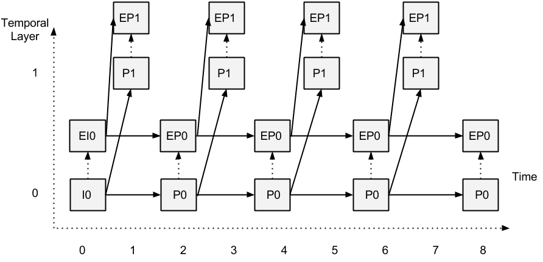

This document defines a set of ECMAScript APIs in WebIDL to allow media to be sent and received
from another browser or device implementing the appropriate set of real-time protocols. However,
unlike the WebRTC 1.0 API, Object Real-Time Communications (ORTC) API does not mandate a media signaling protocol or
format. As a result, ORTC does not utilize Session Description Protocol (SDP), nor does it mandate support for
the Offer/Answer state machine.
Instead, ORTC focuses on "sender", "receiver" and "transport" objects, which have
"capabilities" describing what they are capable of doing,
as well as "parameters" which define what they are configured to do.
"Tracks" and "data channels" are sent over the transports, between senders and receivers.
Overview
Object Real-Time Communications (ORTC) provides a powerful API for the development of WebRTC based applications.
ORTC does not mandate a media signaling protocol or format (as the current WebRTC 1.0 does by mandating SDP Offer/Answer).
Instead, ORTC focuses on "sender", "receiver" and "transport" objects, which have
"capabilities" describing what they are capable of doing,
as well as "parameters" which define what they are configured to do.
"Tracks" and "data channels" are sent over the transports, between senders and receivers.
This specification defines several objects: RTCDtlsTransport (Section 2),
RTCIceTransport (Section 3),
RTCIceTransportController (Section 4),
RTCIceListener (Section 5), RTCRtpSender (Section 6),
RTCRtpReceiver (Section 7),
RTCRtpListener (Section 8),
RTCDtmfSender (Section 10), RTCDataChannel
(Section 11), and RTCSctpTransport (Section 12).
RTP dictionaries are described in Section 9,
the Statistics API is described in Section 13,
the Identity API is described in Section 14,
an event summary is provided in Section 15,
and WebRTC 1.0 compatibility issues are discussed in Section 16.
In a Javascript application utilizing the ORTC API,
the relationship between the application and the objects, as well
as between the objects themselves is shown below.
Horizontal or slanted arrows denote the flow of media or data,
whereas vertical arrows denote interactions via methods and events.

Terminology
The EventHandler
interface represents a callback used for event handlers as defined in
[[!HTML5]].
The concepts queue a
task and fires a
simple event are defined in [[!HTML5]].
The terms event, event
handlers and event
handler event types are defined in [[!HTML5]].
The terms MediaStream and MediaStreamTrack
are defined in
[[!GETUSERMEDIA]].
For Scalable Video Coding (SVC), the terms single-session transmission (SST) and multi-session transmission (MST)
are defined in [[RFC6190]]. This specification only supports SST but not MST. The term SST-SS refers to
an SVC implementation that transmits all layers within a single RTP session, using a single SSRC.
The term SST-MS refers
to an SVC implementation that transmits all layers within a single RTP session, using a distinct SSRC for each layer.
The RTCDtlsTransport Object
The RTCDtlsTransport object includes information relating to Datagram Transport Layer Security (DTLS) transport.
Interface Definition
- readonly attribute RTCIceTransport transport
The associated RTCIceTransport instance.
- readonly attribute RTCDtlsTransportState state
The current state of the DTLS transport.
- RTCDtlsParameters getLocalParameters()
Obtain the DTLS parameters of the local RTCDtlsTransport.
- RTCDtlsParameters? getRemoteParameters()
Obtain the current DTLS parameters of the remote RTCDtlsTransport.
- sequence<ArrayBuffer> getRemoteCertificates()
Obtain the certificates used by the remote peer.
- void start(RTCDtlsParameters remoteParameters)
Start DTLS transport negotiation with the parameters of the remote DTLS transport;
then once the DTLS transport session is established, negotiate a DTLS-SRTP [[!RFC5764]] session to protect media.
Since symmetric RTP [[!RFC4961]] is utilized, the DTLS-SRTP session is bidirectional.
If remoteParameters is invalid, throw an InvalidParameter exception.
- void stop()
Stops and closes the DTLS transport object. stop(). is final - calling start() afterwards
will throw an InvalidState exception.
- attribute EventHandler? ondtlsstatechange
This event handler, of event handler type dtlsstatechange
uses the RTCDtlsStateChangedEvent interface.
It MUST be supported by
all objects implementing the RTCDtlsTransport interface.
It is called any time the RTCDtlsTransportState changes.
- attribute EventHandler? onerror
This event handler, of event handler type error,
MUST be supported by all objects implementing the RTCDtlsTransport interface.
This event MUST be fired on reception of a DTLS alert.
The RTCDtlsParameters Object
The RTCDtlsParameters object includes information relating to DTLS configuration.
- RTCDtlsRole role="auto"
The DTLS role, with a default of auto.
- sequence<RTCDtlsFingerprint> fingerprints
Sequence of fingerprints.
The RTCDtlsFingerprint Object
The RTCDtlsFingerprint object includes the hash function algorithm and certificate fingerprint as described in [[!RFC4572]].
- DOMString algorithm
One of the the hash function algorithms defined in the 'Hash function Textual Names' registry, initially specified in [[!RFC4572]] Section 8.
- DOMString value
The value of the certificate fingerprint in lowercase hex string as expressed utilizing the syntax of 'fingerprint' in [[!RFC4572]] Section 5.
enum RTCDtlsRole
RTCDtlsRole indicates the role of the DTLS transport.
- auto
The DTLS role is determined based on the resolved ICE role: the
'Controlled' role acts as the DTLS client,
the 'Controlling' role acts as the DTLS server.
- client
The DTLS client role.
- server
The DTLS server role.
enum RTCDtlsTransportState
RTCDtlsTransportState indicates the state of the DTLS transport.
- new
The RTCDtlsTransport object has been created and has not started negotiating yet.
- connecting
DTLS is in the process of negotiating a secure connection.
- connected
DTLS has completed negotiation of a secure connection (including DTLS-SRTP).
- closed
The DTLS connection has been closed intentionally or as the result of an error.
RTCDtlsTransportStateChangedEvent
The dtlsstatechange event of the RTCDtlsTransport object uses
the RTCDtlsTransportStateChangedEvent interface.
Firing an
RTCDtlsTransportStateChangedEvent event named
e with an RTCDtlsTransportState
state means that an event with the name e,
which does not bubble (except where otherwise stated) and is not
cancelable (except where otherwise stated), and which uses the
RTCDtlsTransportStateChangedEvent interface with the
state attribute set to the new RTCDtlsTransportState,
MUST be
created and dispatched at the given target.
- readonly attribute RTCDtlsTransportState state
-
The state attribute is the new
RTCDtlsTransportState
that caused the event.
- RTCDtlsTransportState? state
-
The state attribute is the new
RTCDtlsTransportState
that caused the event.
The RTCIceTransport Object
The RTCIceTransport includes information relating to Interactive Connectivity Establishment (ICE).
Operation
An RTCIceTransport instance is constructed without any arguments.
Interface Definition
- readonly attribute RTCIceListener? iceListener
The iceListener is set to the value of listener passed in the latest call to start().
- readonly attribute RTCIceRole role
The current role of the ICE transport.
- readonly attribute RTCIceComponent component
The component-id of the RTCIceTransport.
- readonly attribute RTCIceTransportState state
The current state of the ICE transport.
- sequence<RTCIceCandidate> getRemoteCandidates()
Retrieve the sequence of candidates associated with the remote
RTCIceTransport. Only returns the candidates previously
added using setRemoteCandidates or addRemoteCandidate.
- RTCIceCandidatePair? getNominatedCandidatePair()
Retrieves the nominated candidate pair. If there is no nominated pair yet, NULL is returned.
- void start(RTCIceListener listener, RTCIceParameters remoteParameters, optional RTCIceRole role)
The first time start is called candidate connectivity checks are started and the ICE transport attempts to connect to the remote
RTCIceTransport.
If start is called with invalid parameters,
throw an InvalidParameters exception.
If start is called again, an ICE restart occurs, all remote candidates are flushed, and addRemoteCandidates or
setRemoteCandidates must be called to add the remote candidates back or replace them.
- void stop()
Stops and closes the current object. Also removes the object from the RTCIceTransportController.
- RTCIceParameters? getRemoteParameters()
Obtain the current ICE parameters of the remote RTCIceTransport.
- RTCIceTransport createAssociatedTransport ()
Create an associated RTCIceTransport for RTCP.
If called more than once for the same
component, throw an InvalidStateError exception. If called when
component is "RTCP",
throw a SyntaxError exception.
- void addRemoteCandidate(RTCIceGatherCandidate remoteCandidate)
Add remote candidate associated with remote RTCIceTransport.
- void setRemoteCandidates(sequence<RTCIceCandidate> remoteCandidates)
Set the sequence of candidates associated with the remote RTCIceTransport.
- attribute EventHandler? onicestatechange
This event handler, of event handler type icestatechange,
uses the RTCIceTransportStateChangedEvent interface.
It MUST be supported by
all objects implementing the RTCIceTransport interface.
It is called any time the RTCIceTransportState changes.
- attribute EventHandler? oncandidatepairchange
This event handler, of event handler type icecandidatepairchange,
uses the RTCIceCandidatePairChangedEvent interface.
It MUST be supported by
all objects implementing the RTCIceTransport interface.
It is called any time the nominated RTCIceCandidatePair changes.
enum RTCIceComponent
RTCIceComponent contains the component-id of the RTCIceTransport, which will be "RTP" unless RTP and RTCP are not multiplexed and
the RTCIceTransport object was returned by createAssociatedTransport().
- RTP
The RTP component ID, defined (as '1') in [[!RFC5245]] Section 4.1.1.1.
Protocols multiplexed with RTP (e.g. SCTP data channel) share its component ID.
- RTCP
The RTCP component ID, defined (as '2') in [[!RFC5245]] Section 4.1.1.1.
The RTCIceParameters Object
The RTCIceParameters object includes the ICE username and password.
- DOMString usernameFragment
ICE username.
- DOMString password
ICE password.
enum RTCIceRole
RTCIceRole contains the current role of the ICE transport.
- controlling
controlling state
- controlled
controlled state
enum RTCIceTransportState
RTCIceTransportState represents the current state of the ICE transport.
- new
The ICE Transport is gathering addresses and/or waiting for remote candidates to be supplied.
- checking
The ICE Transport has received at least one remote candidate, and is checking candidate pairs but has not yet found a connection. In addition to checking, it may also still be gathering.
- connected
The ICE Transport has found a usable connection, but is still checking other candidate pairs to see if there is a better connection. It may also still be gathering.
- completed
The ICE Transport has finished gathering and checking and found a connection.
- disconnected
Liveness checks have failed. This may trigger intermittently (and resolve
itself without action).
- closed
The ICE Transport has shut down and is no longer responding to STUN requests.
The non-normative ICE state transitions are:

RTCIceTransportStateChangedEvent
The icestatechange event of the RTCIceTransport object uses
the RTCIceTransportStateChangedEvent interface.
Firing an
RTCIceTransportStateChangedEvent event named
e with an RTCIceTransportState
state means that an event with the name e,
which does not bubble (except where otherwise stated) and is not
cancelable (except where otherwise stated), and which uses the
RTCIceTransportStateChangedEvent interface with the
state attribute set to the new RTCIceTransportState,
MUST be
created and dispatched at the given target.
- readonly attribute RTCIceTransportState state
-
The state attribute is the new
RTCIceTransportState
that caused the event.
- RTCIceTransportState? state
-
The state attribute is the new
RTCIceTransportState
that caused the event.
RTCIceCandidatePairChangedEvent
The icecandidatepairchange event of the RTCIceTransport object uses
the RTCIceCandidatePairChangedEvent interface.
Firing an
RTCIceCandidatePairChangedEvent event named
e with an RTCIceCandidatePair
pair means that an event with the name e,
which does not bubble (except where otherwise stated) and is not
cancelable (except where otherwise stated), and which uses the
RTCIceCandidatePairChangedEvent interface with the
pair attribute set to the nominated RTCIceCandidatePair,
MUST be
created and dispatched at the given target.
- readonly attribute RTCIceCandidatePair pair
-
The pair attribute is the nominated
RTCIceCandidatePair
that caused the event.
- RTCIceCandidatePair pair
-
The pair attribute is the nominated
RTCIceCandidatePair
that caused the event.
The RTCIceServer Object
The RTCIceServer is used to provide STUN or TURN server configuration.
In network topologies with multiple layers of NATs, it is desirable to have a STUN server
between every layer of NATs in addition to the TURN servers to minimize the peer to peer network latency.
An example of an array of RTCIceServer objects:
[ { urls: "stun:stun1.example.net } , { urls:"turn:turn.example.org", username: "user", credential:"myPassword"} ]
- (DOMString or sequence<DOMString>) urls
STUN or TURN URI(s) as defined in [[!RFC7064]] and [[!RFC7065]]
- DOMString username
If this RTCIceServer object represents a TURN server, then this attribute specifies
the username to use with that TURN server.
- DOMString credential
If the uri element is a TURN URI, then this is the credential to use with that TURN server.
The RTCIceCandidate Object
The RTCIceCandidate object includes information relating to an ICE candidate.
{
foundation: "abcd1234",
priority: 1694498815,
ip: "192.0.2.33",
protocol: "udp",
port: 10000,
type: "host"
};
- DOMString foundation
-
A unique identifier that allows ICE to correlate candidates that appear on multiple RTCIceTransports.
- unsigned long priority
The assigned priority of the candidate. This is automatically populated by the browser.
- DOMString ip
The IP address of the candidate.
- RTCIceProtocol protocol
The protocol of the candidate (UDP/TCP).
- unsigned short port
The port for the candidate.
- RTCIceCandidateType type
The type of candidate.
- RTCIceTcpCandidateType tcpType
The type of TCP candidate.
- DOMString relatedAddress=""
-
For candidates that are derived from others, such as relay or reflexive candidates, the relatedAddress
refers to the host candidate that these are derived from. For host candidates, the relatedAddress
is set to the empty string.
- unsigned short relatedPort
-
For candidates that are derived from others, such as relay or reflexive candidates, the relatedPort
refers to the host candidate that these are derived from. For host candidates, the relatedPort
is null.
The RTCIceProtocol
The RTCIceProtocol includes the protocol of the ICE candidate.
- udp
A UDP candidate, as described in [[!RFC5245]].
- tcp
A TCP candidate, as described in [[!RFC6544]].
The RTCIceTcpCandidateType
The RTCIceTcpCandidateType includes the type of the ICE TCP candidate, as described in [[!RFC6544]].
- active
An active TCP candidate is one for which the transport will
attempt to open an outbound connection but will not receive incoming
connection requests.
- passive
A passive TCP candidate is one for which the transport
will receive incoming connection attempts but not attempt a
connection.
- so
An so candidate is one for which the transport will attempt
to open a connection simultaneously with its peer.
The RTCIceCandidateType
The RTCIceCandidateType includes the type of the ICE candidate.
- host
A host candidate.
- srflx
A server reflexive candidate.
- prflx
A peer reflexive candidate.
- relay
A relay candidate.
dictionary RTCIceCandidateComplete
The RTCIceCandidateComplete is an empty dictionary signifying that all RTCIceCandidates are gathered.
dictionary RTCIceCandidatePair
The RTCIceCandidatePair contains the currently selected ICE candidate pair.
- RTCIceCandidate local
The local ICE candidate.
- RTCIceCandidate remote
The remote ICE candidate.
RTCIceTransportEvent
The icecandidate event of the RTCIceTransport and RTCIceListener objects uses
the RTCIceTransportEvent interface.
Firing an
RTCIceTransportEvent event named
e with an RTCIceGatherCandidate
candidate means that an event with the name e,
which does not bubble (except where otherwise stated) and is not
cancelable (except where otherwise stated), and which uses the
RTCIceTransportEvent interface with the
candidate attribute set to the new ICE candidate,
MUST be
created and dispatched at the given target.
- readonly attribute RTCIceGatherCandidate candidate
-
The candidate attribute is the
RTCIceGatherCandidate object with the new ICE
candidate that caused the event.
If candidate is of type RTCIceCandidateComplete,
there are no additional candidates.
- RTCIceGatherCandidate candidate
-
The ICE candidate that caused the event.
Examples
// Assume we already have a way to signal. This is an example
// of how to offer ICE and DTLS parameters and ICE candidates and
// get back ICE and DTLS parameters and ICE candidates, and start
// both ICE and DTLS, assuming that RTP and RTCP are multiplexed.
function initiate(mySignaller) {
var gatherOptions = new RTCIceGatherOptions;
gatherOptions.gatherPolicy = RTCIceGatherPolicy.all;
gatherOptions.iceservers = ... ;
var iceListener = new RTCIceListener(gatherOptions);
var ice = new RTCIceTransport();
var dtls = new RTCDtlsTransport(ice);
// ... get tracks and RTP objects from other example
mySignaller.mySendInitiate({
"ice": iceListener.getLocalParameters(),
"dtls": dtls.getLocalParameters(),
// ... include RTP info from other example
}, function(remote) {
// Start the ICE transport
ice.start(iceListener, remote.ice, RTCIceRole.controlling);
dtls.start(remote.dtls);
// ... start RTP senders and receivers from other example
});
iceListener.onlocalcandidate = function(candidate) {
mySignaller.mySendLocalCandidate(candidate);
}
mySignaller.onRemoteCandidate = function(candidate) {
ice.addRemoteCandidate(candidate);
}
}
// Assume we already have a way to signal and remote info is
// signalled to us. This is an example of how to answer with ICE and DTLS
// and DTLS parameters and ICE candidates and start both ICE and DTLS,
// assuming that RTP and RTCP are multiplexed.
//
function accept(mySignaller, remote) {
var gatherOptions = new RTCIceGatherOptions;
gatherOptions.gatherPolicy = RTCIceGatherPolicy.all;
gatherOptions.iceservers = ... ;
var iceListener = new RTCIceListener(gatherOptions);
var ice = new RTCIceTransport();
var dtls = new RTCDtlsTransport(ice);
// ... get tracks and RTP objects from other example
iceListener.onlocalcandidate = function(candidate) {
mySignaller.mySendLocalCandidate(candidate);
}
mySignaller.onRemoteCandidate = function(candidate) {
ice.addRemoteCandidate(candidate);
}
mySignaller.mySendAccept({
"ice": iceListener.getLocalParameters(),
"dtls": dtls.getLocalParameters()
// ... include RTP info from other example
});
// Start the ICE transport with an implicit gather policy of "all"
ice.start(iceListener,remote.ice, RTCIceRole.controlled);
dtls.start(remote.dtls);
// ... start RTP senders and receivers from other example
}
The RTCIceTransportController Object
The RTCIceTransportController object assists in the managing of ICE freezing and bandwidth estimation.
Interface Definition
- sequence<RTCIceTransport> getTransports()
-
Returns the RTCIceTransport objects with a component
of "RTP".
- void addTransport(RTCIceTransport transport, optional unsigned long index)
-
Adds transport to the RTCIceTransportController
object for the purposes of managing
ICE freezing and sharing bandwidth estimation.
Since addTransport manages ICE freezing, candidate pairs that are not in the
frozen state maintain their state when addTransport(transport) is called.
RTCIceTransport objects will be unfrozen
according to their index. transport is inserted at index,
or at the end if index is not specified.
If index is greater than the current number of RTCIceTransports
with a component of "RTP",
throw an InvalidParameter exception.
If transport has already been added to another
RTCIceTransportController object, or if
the component is "RTCP", throw an InvalidStateError exception.
Examples
// This is an example of how to utilize distinct ICE transports for Audio and Video
// As well as for RTP and RTCP. If both sides can multiplex audio/video
// and/or RTP/RTCP then the multiplexing will occur.
//
// Assume we have an audioTrack and a videoTrack to send.
//
//create the RTP and RTCP ICE listeners for audio and video
var gatherOptions = new RTCIceGatherOptions;
gatherOptions.gatherPolicy = RTCIceGatherPolicy.all;
gatherOptions.iceservers = ... ;
var audioRtpIceListener = new RTCIceListener(gatherOptions);
var audioRtcpIceListener = new RTCIceListener(gatherOptions);
var videoRtpIceListener = new RTCIceListener(gatherOptions);
var videoRtcpIceListener = new RTCIceListener(gatherOptions);
//create the RTP and RTCP ICE transports for audio and video
var audioRtpIceTransport = new RTCIceTransport();
var audioRtcpIceTransport = audioRtpIceTransport.createAssociatedTransport();
var videoRtpIceTransport = new RTCIceTransport();
var videoRtcpIceTransport = audioRtpIceTransport.createAssociatedTransport();
//
// Prepare the audio and video ICE transports
audioRtpIceListener.onlocalcandidate = function (event) {sendLocalCandidate(audioRtpIceTransport, event.candidate,"audio")};
audioRtcpIceListener.onlocalcandidate = function (event) {sendLocalCandidate(audioRtcpIceTransport, event.candidate,"audio")};
videoRtpIceListener.onlocalcandidate = function (event) {sendLocalCandidate(videoRtpIceTransport, event.candidate,"video")};
videoRtcpIceListener.onlocalcandidate = function (event) {sendLocalCandidate(videoRtcpIceTransport, event.candidate,"video")};
audioRtpIceTransport.onicestatechange = ... ;
audioRtpIceListener.onerror = errorHandler;
audioRtcpIceTransport.onicestatechange = ... ;
audioRtcpIceListener.onerror = errorHandler;
videoRtpIceTransport.onicestatechange = ... ;
videoRtpIceListener.onerror = errorHandler;
videoRctpIceTransport.onicestatechange = ... ;
videoRctpIceListener.onerror = errorHandler;
//Prepare the remote candidate handler
mySignaller.onRemoteCandidate = function(remote) {
switch (remote.kind) {
case "audio":
if (remote.component === RTCIceComponent.RTP){
audioRtpIceTransport.addRemoteCandidate(remote.candidate);
} else {
audioRtcpIceTransport.addRemoteCandidate(remote.candidate);
};
break;
case "video":
if (remote.component === RTCIceComponent.RTP){
videoRtpIceTransport.addRemoteCandidate(remote.candidate);
} else {
videoRtcpIceTransport.addRemoteCandidate(remote.candidate);
};
break;
default:
log('Invalid media type received');
};
}
// Create the DTLS transports
var audioRtpDtlsTransport = new RTCDtlsTransport(audioRtpIceTransport);
var audioRtcpDtlsTransport = new RTCDtlsTransport(audioRtcpIceTransport);
var videoRtpDtlsTransport = new RTCDtlsTransport(videoRtpIceTransport);
var videoRtcpDtlsTransport = new RTCDtlsTransport(videoRtcpIceTransport);
//
// Create the sender and receiver objects
var audioSender = new RtpSender(audioTrack, audioRtpDtlsTransport, audioRtcpDtlsTransport);
var videoSender = new RtpSender(videoTrack, videoRtpDtlsTransport, videoRtcpDtlsTransport);
var audioReceiver = new RtpReceiver(audioRtpDtlsTransport, audioRtcpDtlsTransport);
var videoReceiver = new RtpReceiver(videoRtpDtlsTransport, videoRtcpDtlsTransport);
//
// Retrieve the receiver and sender capabilities
var recvAudioCaps = RTCRtpReceiver.getCapabilities("audio");
var recvVideoCaps = RTCRtpReceiver.getCapabilities("video");
var sendAudioCaps = RTCRtpSender.getCapabilities("audio");
var recvVideoCaps = RTCRtpSender.getCapabilities("video");
//
// At this point, ICE/DTLS parameters and Send/Receive capabilities can be exchanged.
mySignaller.myOfferTracks({
// Indicate that the initiator would prefer to multiplex both A/V and RTP/RTCP
"bundle": true,
// Indicate that the initiator is willing to multiplex RTP/RTCP without A/V mux
"rtcpMux": true,
// Offer the ICE parameters
"audioRtpIce": audioRtpIceListener.getLocalParameters(),
"audioRtcpIce": audioRtcpIceListener.getLocalParameters(),
"videoRtpIce": videoRtpIceListener.getLocalParameters(),
"videoRtcpIce": videoRtcpIceListener.getLocalParameters(),
// Offer the DTLS parameters
"audioRtpDtls": audioRtpDtlsTransport.getLocalParameters(),
"audioRtcpDtls": audioRtcpDtlsTransport.getLocalParameters(),
"videoRtpDtls": videoRtpDtlsTransport.getLocalParameters(),
"videoRtcpDtls": videoRtcpDtlsTransport.getLocalParameters(),
// Offer the receiver and sender audio and video capabilities.
"recvAudioCaps": recvAudioCaps,
"recvVideoCaps": recvVideoCaps,
"sendAudioCaps": sendAudioCaps,
"sendVideoCaps": sendVideoCaps
}, function(answer) {
// The responder answers with its preferences, parameters and capabilities
//
// Derive the send and receive parameters, assuming that RTP/RTCP mux will be enabled.
var audioSendParams = myCapsToSendParams(sendAudioCaps, answer.recvAudioCaps);
var videoSendParams = myCapsToSendParams(sendVideoCaps, answer.recvVideoCaps);
var audioRecvParams = myCapsToRecvParams(recvAudioCaps, answer.sendAudioCaps);
var videoRecvParams = myCapsToRecvParams(recvVideoCaps, answer.sendVideoCaps);
//
// If the responder wishes to enable bundle, we will enable it
if (answer.bundle) {
// Only start the single ICE and DTLS transport that is needed.
// No need for the ICE Transport Controller.
audioRtpIceTransport.start(audioRtpIceListener,answer.audioRtpIce, RTCIceRole.controlling);
audioRtpDtlsTransport.start(remote.audioRtpDtls);
//
// Replace the transport on the Sender and Receiver objects
//
audioSender.setTransport(audioRtpDtlsTransport);
videoSender.setTransport(audioRtpDtlsTransport);
audioReceiver.setTransport(audioRtpDtlsTransport);
videoReceiver.setTransport(audioRtpDtlsTransport);
// If BUNDLE was requested, then also assume RTP/RTCP mux
answer.rtcpMux = true;
} else {
if (answer.rtcpMux){
// The peer doesn't want BUNDLE, but it does want to multiplex RTP/RTCP
// Create the ICE Transport Controller object
var controller = new RTCIceTransportController();
controller.addTransport(audioRtpIceTransport);
controller.addTransport(videoRtpIceTransport);
// Start the audio and video ICE transports, with an implicit gather policy of "all"
audioRtpIceTransport.start(audioRtpIceListener,answer.audioRtpIce, RTCIceRole.controlling);
videoRtpIceTransport.start(videoRtpIceListener,answer.videoRtpIce, RTCIceRole.controlling);
// Start the audio and video DTLS transports
audioRtpDtlsTransport.onerror = errorHandler;
audioRtpDtlsTransport.start(answer.audioRtpDtls);
videoRtpDtlsTransport.onerror = errorHandler;
videoRtpDtlsTransport.start(answer.videoRtpDtls);
// Replace the transport on the Sender and Receiver objects
//
audioSender.setTransport(audioRtpDtlsTransport);
videoSender.setTransport(videoRtpDtlsTransport);
audioReceiver.setTransport(audioRtpDtlsTransport);
videoReceiver.setTransport(videoRtpDtlsTransport);
};
// Check if the responder does not want BUNDLE
// and does not want RTP/RTCP multiplexing
if (!answer.rtcpMux) {
// Create the ICE Transport Controller object
var controller = new RTCIceTransportController();
controller.addTransport(audioRtpIceTransport);
controller.addTransport(videoRtpIceTransport);
controller.addTransport(audioRtcpIceTransport);
controller.addTransport(videoRtcpIceTransport);
// Start the ICE transports
audioRtpIceTransport.start(audioRtpIceListener,answer.audioRtpIce, RTCIceRole.controlling);
audioRtcpIceTransport.start(audioRtcpIceListener,answer.audioRtcpIce, RTCIceRole.controlling);
videoRtpIceTransport.start(videoRtpIceListener,answer.videoRtpIce, RTCIceRole.controlling);
videoRtcpIceTransport.start(videoRtcpIceListener,answer.videoRtcpIce, RTCIceRole.controlling);
// Start the DTLS transports that are needed
audioRtpDtlsTransport.start(answer.audioRtpDtls);
audioRtcpDtlsTransport.start(answer.audioRtcpDtls);
videoRtpDtlsTransport.start(answer.videoRtpDtls);
videoRtcpDtlsTransport.start(answer.videoRtcpDtls);
// Disable RTP/RTCP multiplexing
audioSendParams.rtcp.mux = false;
videoSendParams.rtcp.mux = false;
audioRecvParams.rtcp.mux = false;
videoRecvParams.rtcp.mux = false;
};
//
// Set the audio and video send and receive parameters.
audioSender.send(audioSendParams);
videoSender.send(videoSendParams);
audioReceiver.receive(audioRecvParams);
videoReceiver.receive(videoRecvParams);
});
// Now we can render/play
// audioReceiver.track and videoReceiver.track.
// Helper functions
function log(text) {
console.log('Time: ' + (performance.now() / 1000).toFixed(3) + ' ' + text);
}
function errorHandler (error) {
log('Error encountered: ' + error.name);
}
function sendLocalCandidate(transport, candidate, kind){
mySignaller.mySendLocalCandidate({
"candidate": candidate,
"kind": kind,
"component": transport.component
});
}
The RTCIceListener Object
The RTCIceListener enables an endpoint to construct multiple RTCIceTransport
objects from a set of local ICE parameters,
enabling usage scenarios such as parallel forking.
Interface Definition
- RTCIceParameters getLocalParameters()
Obtain the ICE parameters of the RTCIceListener.
- sequence<RTCIceCandidate> getLocalCandidates()
Retrieve the sequence of valid local candidates associated with the
RTCIceListener.
This retrieves all local candidates currently known (except for peer reflexive candidates),
even if an onlocalcandidate
event hasn't been processed yet.
- attribute EventHandler? onerror
This event handler, of event handler type error,
MUST be supported by all objects
implementing the RTCIceListener interface.
If TURN credentials are invalid, then this event MUST
be fired.
- attribute EventHandler? onlocalcandidate
This event handler, of event handler event type icecandidate,
MUST be supported by all objects implementing the
RTCIceListener interface.
It receives events when a new local ICE candidate is available.
dictionary RTCIceGatherOptions
RTCIceGatherOptions provides options relating to the gathering of ICE candidates.
- RTCIceGatherPolicy gatherPolicy
The ICE gather policy.
- sequence<RTCIceServer> iceservers
The ICE servers to be configured.
enum RTCIceGatherPolicy
RTCIceGatherPolicy denotes the policy relating to the gathering of ICE candidates.
- all
The ICE transport gathers all types of candidates when this value is specified.
- nohost
The ICE transport gathers all ICE candidate types except for host candidates.
- relay
The ICE transport MUST only gather media relay candidates such as candidates passing through a TURN server.
This can be used to reduce leakage of IP addresses in certain use cases.
Example
// Example to demonstrate forking when RTP and RTCP are not multiplexed.
var iceGatherOptions = new RTCIceGatherOptions();
gatherOptions.gatherPolicy = RTCIceGatherPolicy.relay;
gatherOptions.iceservers = ... ;
var iceRtpListener = new RTCIceListener(gatherOptions);
var iceRtcpListener = new RTCIceListener(gatherOptions);
var iceBaseRtpTransport = new RTCIceTransport();
//create the RTCP ICE transport, which inherits the iceGatherOptions
var iceBaseRtcpTransport = iceBaseRtpTransport.createAssociatedTransport();
mySendInitiate(
{
"icertp": iceRtpListener.getLocalParameters(),
"icertcp": iceRtcpListener.getLocalParameters()
},
function(response) {
// We may get N responses
// Create the ICE Transport Controller object
var controller = new RTCIceTransportController();
controller.addTransport(iceRtpTransport);
controller.addTransport(iceRtcpTransport);
// Start the ICE transports (using the "relay" gather policy inherited from the iceListener)
iceRtpTransport.start(iceRtpListener,response.icertp, RTCIceRole.controlling);
iceRtcpTransport.start(iceRtcpListener,response.icertcp, RTCIceRole.controlling);
// ... setup DTLS, RTP, SCTP, etc.
});
iceRtpListener.onlocalcandidate = mySendLocalRtpCandidate;
iceRtcpListener.onlocalcandidate = mySendLocalRtcpCandidate;
The RTCRtpSender Object
The RTCRtpSender includes information relating to the RTP sender.
Interface Definition
- readonly attribute MediaStreamTrack track
-
The associated MediaStreamTrack instance.
- readonly attribute RTCDtlsTransport transport
-
The associated RTP RTCDtlsTransport instance.
- readonly attribute RTCDtlsTransport rtcpTransport
-
The associated RTCP RTCDtlsTransport instance.
- void setTransport(RTCDtlsTransport transport, optional RTCDtlsTransport rtcpTransport)
Set the RTP RTCDtlsTransport (and if used) RTCP RTCDtlsTransport.
- void setTrack(MediaStreamTrack track)
Set the MediaStreamTrack.
- static RTCRtpCapabilities getCapabilities(optional DOMString kind)
Obtain the sender capabilities, based on kind. If kind is
omitted or is set to "", then all capabilities are returned.
- void send(RTCRtpParameters parameters)
Media to be sent is controlled by parameters.
If send() is called with invalid RTCRtpParameters,
throw an InvalidParameters exception.
The send() method does not update
parameters based on what is currently being sent, so that the value of parameters remains that
last passed to the send() method.
The RTCRtpSender object starts sending when send()
is called for the first time, and changes the sending parameters when send() is called again.
The RTCRtpSender object stops sending when stop() is called.
- void stop()
Stops sending the track on the wire, and sends an RTCP BYE.
Stop is final as in MediaStreamTrack.stop()
- attribute EventHandler? onerror
This event handler, of event handler type error,
MUST be supported by all objects implementing the RTCRtpSender interface.
This event MUST be fired if an issue is found
with the RTCRtpParameters object passed to
send(), that is not immediately detected.
- attribute EventHandler? onssrcconflict
This event handler, of event handler type RTCSsrcConflictEvent,
MUST be supported by all objects implementing the RTCRtpSender interface.
This event MUST be fired if an SSRC conflict is detected.
On an SSRC conflict, the RTCRtpSender automatically sends an RTCP BYE on the conflicted SSRC.
RTCSsrcConflictEvent
The ssrcconflict event of the RTCRtpSender object uses
the RTCSsrcConflictEvent interface.
Firing an
RTCSsrcConflictEvent event named
e with an
ssrc means that an event with the name e,
which does not bubble (except where otherwise stated) and is not
cancelable (except where otherwise stated), and which uses the
RTCSsrcConflictEvent interface with the
ssrc attribute set to the conflicting SSRC
MUST be
created and dispatched at the given target.
- readonly attribute unsigned long ssrc
-
The ssrc attribute represents the conflicting SSRC
that caused the event.
- unsigned long? ssrc
-
The ssrc attribute represents the conflicting SSRC
that caused the event.
The RTCRtpReceiver Object
The RTCRtpReceiver includes information relating to the RTP receiver.
Interface Definition
- readonly attribute MediaStreamTrack? track
-
The associated MediaStreamTrack instance.
- readonly attribute RTCDtlsTransport transport
-
The associated RTP RTCDtlsTransport instance.
- readonly attribute RTCDtlsTransport rtcpTransport
-
The associated RTCP RTCDtlsTransport instance.
- void setTransport(RTCDtlsTransport transport, optional RTCDtlsTransport rtcpTransport)
Set the RTP RTCDtlsTransport (and if used) RTCP RTCDtlsTransport.
- static RTCRtpCapabilities getCapabilities(optional DOMString kind)
Obtain the receiver capabilities, based on kind. If kind is omitted or set to "", then
all capabilities are returned.
- void receive(RTCRtpParameters parameters)
Media to be received is controlled by parameters.
If receive() is called with invalid RTCRtpParameters,
throw an InvalidParameters exception.
The receive() method does not update
parameters based on what is currently being received, so that the value of parameters remains that
last passed to the receive() method.
The RTCRtpReceiver object starts receiving when receive()
is called for the first time, and changes the receiving parameters when receive() is called again.
The RTCRtpReceiver object stops receiving when stop() is called.
After receive returns, track is set, and the value of track.kind is determined
based on the kind of the codecs provided in parameters.codecs.
If parameters.codecs are all of a single kind then track.kind is set to that kind.
If parameters.codecs are of mixed kind,
throw an InvalidParameters exception.
- void stop()
Stops receiving the track on the wire. Stop is final like MediaStreamTrack.
- attribute EventHandler? onerror
This event handler, of event handler type error,
MUST be supported by all objects implementing the RTCRtpReceiver interface.
This event MUST be fired if an issue is found with the RTCRtpParameters object passed to
receive(), that is not immediately detected.
Examples
// Assume we already have a way to signal, a transport
// (RTCDtlsTransport), and audio and video tracks. This is an example
// of how to offer them and get back an answer with audio and
// video tracks, and begin sending and receiving them.
// The example assumes that RTP and RTCP are multiplexed.
function myInitiate(mySignaller, transport, audioTrack, videoTrack) {
var audioSender = new RTCRtpSender(audioTrack, transport);
var videoSender = new RTCRtpSender(videoTrack, transport);
var audioReceiver = new RTCRtpReceiver(transport);
var videoReceiver = new RTCRtpReceiver(transport);
// Retrieve the audio and video receiver capabilities
var recvAudioCaps = RTCRtpReceiver.getCapabilities("audio");
var recvVideoCaps = RTCRtpReceiver.getCapabilities("video");
// Retrieve the audio and video sender capabilities
var sendAudioCaps = RTCRtpSender.getCapabilities("audio");
var sendVideoCaps = RTCRtpSender.getCapabilities("video");
mySignaller.myOfferTracks({
// The initiator offers its receiver and sender capabilities.
"recvAudioCaps": recvAudioCaps,
"recvVideoCaps": recvVideoCaps,
"sendAudioCaps": sendAudioCaps,
"sendVideoCaps": sendVideoCaps
}, function(answer) {
// The responder answers with its receiver capabilities
// Derive the send and receive parameters
var audioSendParams = myCapsToSendParams(sendAudioCaps, answer.recvAudioCaps);
var videoSendParams = myCapsToSendParams(sendVideoCaps, answer.recvVideoCaps);
var audioRecvParams = myCapsToRecvParams(recvAudioCaps, answer.sendAudioCaps);
var videoRecvParams = myCapsToRecvParams(recvVideoCaps, answer.sendVideoCaps);
audioSender.send(audioSendParams);
videoSender.send(videoSendParams);
audioReceiver.receive(audioRecvParams);
videoReceiver.receive(videoRecvParams);
// Now we can render/play
// audioReceiver.track and videoReceiver.track.
});
}
// Assume we already have a way to signal, a transport (RTCDtlsTransport)
// and audio and video tracks. This is an example of how to answer an
// offer with audio and video tracks, and begin sending and receiving them.
// The example assumes that RTP and RTCP are multiplexed.
function myAccept(
mySignaller, remote, transport, audioTrack, videoTrack) {
var audioSender = new RTCRtpSender(audioTrack, transport);
var videoSender = new RTCRtpSender(videoTrack, transport);
var audioReceiver = new RTCRtpReceiver(transport);
var videoReceiver = new RTCRtpReceiver(transport);
// Retrieve the send and receive capabilities
var recvAudioCaps = RTCRtpReceiver.getCapabilities("audio");
var recvVideoCaps = RTCRtpReceiver.getCapabilities("video");
var sendAudioCaps = RTCRtpSender.getCapabilities("audio");
var sendVideoCaps = RTCRtpSender.getCapabilities("video");
mySignaller.myAnswerTracks({
"recvAudioCaps": recvAudioCaps,
"recvVideoCaps": recvVideoCaps,
"sendAudioCaps": sendAudioCaps,
"sendVideoCaps": sendVideoCaps
});
// Derive the send and receive parameters using Javascript functions defined in Section 15.2.
var audioSendParams = myCapsToSendParams(sendAudioCaps, remote.recvAudioCaps);
var videoSendParams = myCapsToSendParams(sendVideoCaps, remote.recvVideoCaps);
var audioRecvParams = myCapsToRecvParams(recvAudioCaps, remote.sendAudioCaps);
var videoRecvParams = myCapsToRecvParams(recvVideoCaps, remote.sendVideoCaps);
audioSender.send(audioSendParams);
videoSender.send(videoSendParams);
audioReceiver.receive(audioRecvParams);
videoReceiver.receive(videoRecvParams);
// Now we can render/play
// audioReceiver.track and videoReceiver.track.
}
The RTCRtpListener Object
The RTCRtpListener listens to RTP packets received from the DTLS transport.
Interface Definition
- readonly attribute RTCDtlsTransport transport
-
The RTP RTCDtlsTransport instance.
- attribute EventHandler? onunhandledrtp
The event handler which handles the RTCRtpUnhandledRtpEvent.
RTCRtpUnhandledEvent
An unhandledrtp event is fired if the RTCRtpListener detects an
RTP stream that is not configured to be processed by an
existing RTCRtpReceiver object. The amount of buffering to be provided for unhandled
RTP streams is recommended to be strictly limited to protect against denial of service attacks.
To determine whether an RTP stream is configured to be processed by an existing RTCRtpReceiver object,
the RTCRtpListener attempts to match the values of an incoming RTP packet's
Payload Type and SSRC fields as well as the value of the muxId (if present in the MID RTP header extension) against the
RTCRtpReceiver.RTCRtpParameters.RTCRtpCodecParameters.payLoadType,
RTCRtpReceiver.RTCRtpParameters.RTCRtpEncodingParameters.ssrc,
and RTCRtpReceiver.RTCRtpParameters.muxId attributes of configured RTCRtpReceiver objects.
TODO: provide details of matching behavior, along with examples.
The unhandledrtp event of the RTCRtpListener object uses
the RTCRtpUnhandledEvent interface.
Firing an
unhandledrtp event named
e with an RTCRtpUnhandled
stream means that an event with the name e,
which does not bubble (except where otherwise stated) and is not
cancelable (except where otherwise stated), and which uses the
RTCRtpUnhandledEvent interface with the
stream attribute set to an RTCRtpUnhandled object,
MUST be
created and dispatched at the given target.
- readonly attribute RTCRtpUnhandled stream
-
The stream attribute is the
RTCRtpUnhandled object with the characteristics of the RTP stream
that caused the event.
- RTCRtpUnhandled? stream
-
The characteristics of the RTP stream that caused the event.
Dictionaries related to Rtp
RTCRtpUnhandled
RTCRtpUnhandled provides information on the RTP packet that caused the RTCRtpUnhandled event.
- unsigned long ssrc
-
The SSRC in the RTP stream triggering the unhandledrtp event.
- payloadtype payloadType
-
The Payload Type value in the RTP stream triggering the unhandledrtp event.
- DOMString muxId
-
If present, the value of the MID RTP header extension [[!BUNDLE]] in the RTP stream
triggering the unhandledrtp event.
dictionary RTCRtpCapabilities
The RTCRtpCapabilities object expresses the capabilities of RTCRtpSender and
RTCRtpReceiver objects.
Features which are mandatory to implement in [[!RTP-USAGE]], such as RTP/RTCP multiplexing [[!RFC5761]]
and reduced size RTCP [[!RFC5506]] are assumed to be available and are therefore
not included in RTCRtpCapabilities,
although these features can be set via RTCRtpParameters.
- sequence<RTCRtpCodecCapability> codecs
Supported codecs.
- sequence<RTCRtpHeaderExtension> headerExtensions
Supported RTP header extensions.
- sequence<DOMString> fecMechanisms
Supported FEC mechanisms. Currently [[!RTP-USAGE]] makes no recommendations relating to FEC mechanisms.
dictionary RTCRtcpFeedback
RTCRtcpFeedback provides information on RTCP feedback messages.
- DOMString type
Valid values for type are the "RTCP Feedback" Attribute Values enumerated in [[!IANA-SDP-14]] ("ack", "ccm", "nack", etc.).
- DOMString parameter
For a type of "ack" or "nack", valid values for parameters are the "ack" and "nack" Attribute Values enumerated in [[!IANA-SDP-15]] ("sli", "rpsi", etc.).
For a type of "ccm", valid values for parameters are the "Codec Control Messages" enumerated in [[!IANA-SDP-19]] ("fir", "tmmbr" (includes "tmmbn"), etc.).
dictionary RTCRtpCodecCapability
RTCRtpCodecCapability provides information on the capabilities of a codec.
- DOMString name
The MIME media type. Valid types are
listed in [[!IANA-RTP-2]].
- DOMString kind
The media supported by the codec: "audio", "video" or "" for both.
- unsigned long clockRate
Codec clock rate expressed in Hertz, null if unset.
- payloadtype preferredPayloadType
Added to make it possible for the sender and receiver to pick a
matching payload type when creating sender and receiver parameters.
- unsigned long numChannels
The number of channels supported (e.g. stereo).
For video, this will be unset.
- sequence<RTCRtcpFeedback> rtcpFeedback
Transport layer and codec-specific feedback messages for this codec.
- Dictionary parameters
Codec-specific parameters that must be signaled to the remote party.
- Dictionary options
Codec-specific parameters available for signaling.
- unsigned short maxTemporalLayers = 0
Maximum number of temporal layer extensions supported by this codec (e.g. a value of 1 indicates support for up to 2 temporal layers). A value of 0 indicates no support for temporal scalability.
- unsigned short maxSpatialLayers = 0
Maximum number of spatial layer extensions supported by this codec (e.g. a value of 1 indicates support for up to 2 spatial layers). A value of 0 indicates no support for spatial scalability.
- boolean svcMultiStreamSupport
Whether the implementation can send SVC layers utilizing distinct SSRCs.
Unset for audio codecs. For video codecs, only set if the codec supports scalable video coding with
multiple streams.
Codec capability parameters
The capability parameters for commonly implemented codecs are provided below.
Opus
The following capabilities are defined for Opus, as noted in [[!OPUS-RTP]] Section 6.1:
| Property Name |
Values |
Notes |
| maxplaybackrate |
unsigned long
|
A hint about the maximum output sampling rate that
the receiver is capable of rendering in Hz.
|
| stereo |
boolean
|
Specifies whether the decoder prefers receiving stereo (if true) or mono signals (if false).
|
VP8
The following receiver capabilities are defined for VP8, as noted in [[VP8-RTP]] Section 6.1:
| Property Name |
Values |
Notes |
| max-fr |
unsigned long
|
This capability indicates the maximum frame rate in frames per second that the decoder is capable of decoding.
|
| max-fs |
unsigned long long
|
This capability indicates the maximum frame size in macroblocks that the decoder is capable of decoding.
|
H.264
The following capabilities are defined for H.264, as noted in [[RFC6184]] Section 8.1, and [[!RTCWEB-VIDEO]].
| Property Name |
Values |
Notes |
| max-recv-level |
unsigned long
|
Indicates the highest level a receiver supports. |
| packetization-mode |
sequence<unsigned short> |
A sequence of unsigned shorts, each ranging from 0 to 2, indicating supported packetization-mode values.
Support for packetization-mode 1 is mandatory in [[!RTCWEB-VIDEO]].
|
dictionary RTCRtpParameters
RTCRtpParameters contains the RTP stack settings.
- DOMString muxId=""
The muxId assigned to the RTP stream, if any, empty string if unset.
In an RTCRtpReceiver or RTCRtpSender object, this corresponds to
MID RTP header extension defined in [[!BUNDLE]].
This is a stable identifier that permits the track corresponding to an RTP stream to be identified, rather than relying on an SSRC.
An SSRC is randomly generated and can change arbitrarily due to conflicts with other SSRCs, whereas
the muxId has a value
whose meaning can be defined in advance between RTP
sender and receiver, assisting in RTP demultiplexing.
Note that including muxId in RTCRtpParameters rather than in RTCRtpEncodingParameters implies that if it is desired to send simulcast streams with different muxId values for each stream, then multiple
RTCRtpSender objects are needed.
- sequence<RTCRtpCodecParameters> codecs
The codecs to send or receive (could include RED [[RFC2198]], RTX [[!RFC4588]] and CN [[RFC3389]]).
- sequence<RTCRtpHeaderExtensionParameters> headerExtensions
Configured header extensions.
- sequence<RTCRtpEncodingParameters> encodings
The "encodings" or "layers" to be used for things like simulcast, Scalable Video Coding, RTX, FEC, etc.
- RTCRtcpParameters rtcp
Parameters to configure RTCP.
dictionary RTCRtcpParameters
RTCRtcpParameters provides information on RTCP settings.
- unsigned long ssrc
The SSRC to be used in the Receiver Report "SSRC of packet sender" field as defined in [[!RFC3550]] Section 6.4.2.
If unset, ssrc is chosen by the browser, and the chosen value is not reflected in RTCRtcpParameters.ssrc.
If the browser chooses the ssrc it may change it in event of a collision, as described in [[!RFC3550]].
- DOMString cname
The Canonical Name (CNAME) used by RTCP (e.g. in SDES messages). Guidelines for CNAME generation are provided in [[!RTP-USAGE]] Section 4.9.
By default, ORTC implementations SHOULD set the CNAME to be the same within all RTCRtcpParameter objects created within the
same Javascript sandbox. For backward compatibility with WebRTC 1.0, applications MAY set the CNAME; if unset, the CNAME is chosen by the browser.
- boolean reducedSize=false
Whether reduced size RTCP [[!RFC5506]] is configured (if true) or compound RTCP as specified in [[!RFC3550]] (if false).
The default is false.
- boolean mux=true
Whether RTP and RTCP are multiplexed, as specified in [[!RFC5761]].
The default is true. If set to false, the
RTCIceTransport
MUST have an associated RTCIceTransport object with
a component of "RTCP",
in which case RTCP will be sent on the associated RTCIceTransport.
dictionary RTCRtpCodecParameters
RTCRtpCodecParameters provides information on codec settings.
- DOMString name
The MIME media type. Valid types are
listed in [[!IANA-RTP-2]]. The name MUST always be provided.
- payloadtype payloadType
The value that goes in the RTP Payload Type Field [[!RFC3550]]. The payloadType
MUST always be provided.
- unsigned long clockRate
Codec clock rate expressed in Hertz, null if unset.
- unsigned long numChannels
The number of channels supported (e.g. stereo). If unset for audio, use the codec default.
For video, this can be left unset.
- sequence<RTCRtcpFeedback> rtcpFeedback
Transport layer and codec-specific feedback messages for this codec.
- Dictionary parameters
Codec-specific parameters available for signaling.
Codec parameters
The capabilities for commonly implemented codecs described in Section 9.4.2, are also
used as codec parameters, with
RTCRtpCodecCapability.parameters of the receiver used as
RTCRtpCodecParameters.parameters of the sender, and
RTCRtpCodecCapability.parameters of the sender used as
RTCRtpCodecParameters.parameters of the receiver, with the Property Name
and Values unchanged.
dictionary RTCRtpEncodingParameters
- unsigned long ssrc
The SSRC for this layering/encoding.
If ssrc is unset in a RTCRtpEncodingParameters object passed to the RTCRtpReceiver.receive method, the
next unhandled SSRC will match, and an RTCRtpUnhandledEvent will not be fired.
If ssrc is unset in a RTCRtpEncodingParameters object passed to the RTCRtpSender.send
method, the browser will choose, and the chosen value is not reflected in RTCRtpEncodingParameters.ssrc.
If the browser chooses the
ssrc, it may change it due to a collision without firing an RTCSsrcConflictEvent.
If ssrc is set in a RTCRtpEncodingParameters object passed to the RTCRtpSender.send method and an
SSRC conflict is detected, then an RTCSsrcConflictEvent is fired (see Section 6.4).
- payloadtype codecPayloadType
For per-encoding codec specifications, give the codec Payload Type here.
If unset, the browser will choose.
- RTCRtpFecParameters fec
Specifies the FEC mechanism if set.
- RTCRtpRtxParameters rtx
Specifies the RTX [[!RFC4588]] parameters if set.
- double priority=1.0
The higher the value, the more the bits will be given to each as available bandwidth goes up. Default is 1.0.
For scalable video coding, this parameter is only relevant for the base layer.
This parameter is ignored in an RTCRtpReceiver object.
If unset, the default is assumed.
- double maxBitrate
Ramp up resolution/quality/framerate until this bitrate, if set. Summed when using dependent layers.
This parameter is ignored in scalable video coding, or in an RTCRtpReceiver object.
If unset, there is no maximum bitrate.
- double minQuality=0
Never send less than this quality. 1.0 = maximum attainable quality.
For scalable video coding, this parameter is only relevant for the base layer.
This parameter is ignored in an RTCRtpReceiver object.
- double framerateBias=0.5
What to give more bits to, if available. 0.0 = strongly favor resolution or 1.0 = strongly favor
framerate. 0.5 = neither (default). For scalable video coding, this parameter is only relevant for the base layer.
This parameter is ignored in an RTCRtpReceiver object.
If unset, the default is assumed.
- double resolutionScale
Inverse of the input resolution fraction to be encoded, or die trying. Example: 1.0 = full resolution,
2.0 = one half of the full resolution.
For scalable video coding, resolutionScale refers to
the inverse aggregate fraction of the input resolution achieved by this
layer when combined with all
dependent layers.
- double framerateScale
Inverse of the input framerate fraction to be encoded. Example: 1.0 = full framerate,
2.0 = one half of the full framerate.
For scalable video coding, framerateScale refers to the inverse of the aggregate fraction of input framerate
achieved by this layer when combined with all dependent layers.
- boolean active=true
Whether the sender or receiver is active. If false, don't send any media right now.
Disable is different than omitting the encoding; it can keep resources
available to re-enable more quickly than re-adding. Plus, it still sends RTCP. If unset, the default is assumed.
- DOMString encodingId
An identifier for the encoding object. This identifier should be unique within the scope of the
localized sequence of RTCRtpEncodingParameters for any given RTCRtpParameters object.
- sequence<DOMString> dependencyEncodingIds
The encodingIds on which this layer depends.
Within this specification encodingIds are permitted only within the same RTCRtpEncodingParameters sequence.
In the future if MST were to be supported, then if searching within an
RTCRtpEncodingParameters sequence did not produce a match, then a global search
would be carried out.
Examples
Basic Example
//Send a thumbnail along with regular size
var encodings = [{ ssrc: 1, priority: 1.0 }]
// Control the resolution and framerate with a different track and RtpSender.
var encodings = [{ ssrc: 2,
// Prioritize the thumbnail over the main video.
priority: 10.0 }];
// Sign Language (need high framerate, but don't get too bad quality)
var encodings = [{ minQuality: 0.2, framerateBias: 1.0 }];
// Screencast (High quality, framerate can be low)
var encodings = [{ framerateBias: 0.0 }];
//Remote Desktop (High framerate, must not downscale)
var encodings = [{ framerateBias: 1.0 }];
// Audio more important than video
var audioEncodings = [{ priority: 10.0 }];
var videoEncodings = [{ priority: 0.1 }];
//Video more important than audio
var audioEncodings = [{ priority: 0.1 }];
var videoEncodings = [{ priority: 10.0 }];
//Crank up the quality
var encodings = [{ maxBitrate: 10000000 }];
//Keep the bandwidth low
var encodings = [{ maxBitrate: 100000 }];
Temporal Scalability
Example of 3-layer temporal scalability encoding
var encodings =[{
// Base framerate is one quarter of the input framerate
encodingId: "0",
framerateScale: 4.0
}, {
// Temporal enhancement (half the input framerate when combined with the base layer)
encodingId: "1",
dependencyEncodingIds: ["0"]
framerateScale: 2.0
}, {
// Another temporal enhancement layer (full input framerate when all layers combined)
encodingId: "2",
dependencyEncodingIds: ["0", "1"]
framerateScale: 1.0
}]
Example of 3-layer temporal scalability with all but the base layer disabled
var encodings =[{
encodingId: "0",
framerateScale: 4.0
}, {
encodingId: "1",
dependencyEncodingIds: ["0"],
framerateScale: 2.0,
active: false
}, {
encodingId: "2",
dependencyEncodingIds: ["0", "1"],
framerateScale: 1.0,
active: false
}];
Below is a representation of a 3-layer temporal scalability encoding. In the diagram, I0 is the base layer I-frame,
and P0 represents base-layer P-frames. P1 represents the first temporal enhancement layer, and P2 represents the
second temporal enhancement layer.

Spatial Simulcast
Example of 3-layer spatial simulcast
var encodings =[{
// Simulcast layer at one quarter scale
encodingId: "0",
resolutionScale: 4.0
}, {
// Simulcast layer at one half scale
encodingId: "1",
resolutionScale: 2.0
}, {
// Simulcast layer at full scale
encodingId: "2",
resolutionScale: 1.0
}]
Example of 3-layer spatial simulcast with all but the lowest resolution layer disabled
var encodings =[{
encodingId: "0",
resolutionScale: 4.0
}, {
encodingId: "1",
resolutionScale: 2.0,
active: false
}, {
encodingId: "2",
resolutionScale: 1.0,
active: false
}];
Example of 2-layer spatial simulcast combined with 2-layer temporal scalability
var encodings =[{
// Low resolution base layer (half the input framerate, half the input resolution)
encodingId: "0",
resolutionScale: 2.0,
framerateScale: 2.0
}, {
// Enhanced resolution Base layer (half the input framerate, full input resolution)
encodingId: "E0",
resolutionScale: 1.0,
framerateScale: 2.0
}, {
// Temporal enhancement to the low resolution base layer (full input framerate, half resolution)
encodingId: "1",
dependencyEncodingIds: ["0"],
resolutionScale: 2.0,
framerateScale: 1.0
}, {
// Temporal enhancement to the enhanced resolution base layer (full input framerate and resolution)
encodingId: "E1",
dependencyEncodingIds: ["E0"],
resolutionScale: 1.0,
framerateScale: 1.0
}]
Below is a representation of 2-layer temporal scalability combined with 2-layer spatial simulcast.
Solid arrows represent temporal prediction.
In the diagram, I0 is the base-layer I-frame, and P0 represents base-layer P-frames.
EI0 is an enhanced resolution base-layer I-frame, and EP0 represents P-frames within the enhanced resolution base layer.
P1 represents the first temporal enhancement layer, and EP1 represents a temporal enhancement to the
enhanced resolution simulcast base-layer.

Spatial Scalability
Example of 3-layer spatial scalability encoding
var encodings =[{
// Base layer with one quarter input resolution
encodingId: "0",
resolutionScale: 4.0
}, {
// Spatial enhancement layer providing half input resolution when combined with the base layer
encodingId: "1",
dependencyEncodingIds: ["0"]
resolutionScale: 2.0
}, {
// Additional spatial enhancement layer providing full input resolution when combined with all layers
encodingId: "2",
dependencyEncodingIds: ["0", "1"]
resolutionScale: 1.0
}]
Example of 3-layer spatial scalability with all but the base layer disabled
var encodings =[{
encodingId: "0",
resolutionScale: 4.0
}, {
encodingId: "1",
dependencyEncodingIds: ["0"],
resolutionScale: 2.0,
active: false
}, {
encodingId: "2",
dependencyEncodingIds: ["0", "1"],
resolutionScale: 1.0,
active: false
}];
Example of 2-layer spatial scalability combined with 2-layer temporal scalability
var encodings =[{
// Base layer (half input framerate, half resolution)
encodingId: "0",
resolutionScale: 2.0,
framerateScale: 2.0
}, {
// Temporal enhancement to the base layer (full input framerate, half resolution)
encodingId: "1",
dependencyEncodingIds: ["0"],
resolutionScale: 2.0,
framerateScale: 1.0
}, {
// Spatial enhancement to the base layer (half input framerate, full resolution)
encodingId: "E0",
dependencyEncodingIds: ["0"],
resolutionScale: 1.0,
framerateScale: 2.0
}, {
// Temporal enhancement to the spatial enhancement layer (full input framerate, full resolution)
encodingId: "E1",
dependencyEncodingIds: ["E0", "1"],
resolutionScale: 1.0,
framerateScale: 1.0
}]
Below is a representation of 2-layer temporal scalability combined with 2-layer spatial scalability.
Solid arrows represent temporal prediction and dashed arrows represent inter-layer prediction.
In the diagram, I0 is the base-layer I-frame, and EI0 is an intra spatial enhancement.
P0 represents base-layer P-frames, and P1 represents the first temporal enhancement layer.
EP0 represents a resolution enhancement to the base-layer P frames, and EP1 represents a resolution enhancement to the
second temporal layer P-frames.

dictionary RTCRtpFecParameters
- unsigned long ssrc
The SSRC to use for FEC.
If unset in an RTCRtpSender object, the browser will choose.
- DOMString mechanism
The Forward Error Correction (FEC) mechanism to use.
dictionary RTCRtpRtxParameters
- unsigned long ssrc
The SSRC to use for RTX.
If unset in an RTCRtpSender object, the browser will choose.
The RTCDtmfSender Object
This section of the ORTC API specification depends on the WebRTC 1.0 DtmfSender API, and needs to be synchronized once it is updated.
Overview
An RTCDtmfSender instance allows sending DTMF tones to/from the remote peer, as per [[!RFC4733]].
Interface Definition
- readonly attribute boolean canInsertDTMF
-
Whether the RTCDtmfSender is capable of sending DTMF.
- void insertDTMF(in DOMString tones, optional long duration, long
interToneGap)
- readonly attribute RTCRtpSender sender
The RTCRtpSender instance
- attribute EventHandler ontonechange
-
The ontonechange event handler uses the
RTCDTMFToneChangeEvent interface to return the
character for each tone as it is played out.
- readonly attribute DOMString toneBuffer
-
The toneBuffer attribute returns a list of the
tones remaining to be played out.
- readonly attribute long duration
-
The duration attribute returns the current tone duration
value in milliseconds. This value will be the value last set via the
insertDTMF() method, or the default value of 70 ms if
insertDTMF() was called without specifying the duration.
- readonly attribute long interToneGap
-
The interToneGap attribute returns the current value of
the between-tone gap. This value will be the value last set via the
insertDTMF() method, or the default value of 70
ms if insertDTMF() was called without specifying
the interToneGap.
RTCDTMFToneChangeEvent
The tonechange event uses the
RTCDTMFToneChangeEvent interface.
Firing an tonechange event named
e with a DOMString tone means
that an event with the name e, which does not bubble (except
where otherwise stated) and is not cancelable (except where otherwise
stated), and which uses the RTCDTMFToneChangeEvent
interface with the tone
attribute set to
tone, MUST be created and dispatched at the given target.
- readonly attribute DOMString tone
-
The tone
attribute contains the character for the tone that has just begun
playout (see insertDTMF()). If the value is the
empty string, it indicates that the previous tone has completed
playback.
- DOMString tone=""
-
The tone parameter is treated as a series of characters.
The characters 0 through 9, A through D, #, and * generate the associated DTMF tones.
The characters a to d are equivalent to A to D.
The character ',' indicates a delay of 2 seconds before processing the next character in the tones parameter.
Unrecognized characters are ignored.
DTMF Example
Examples assume that sendObject is an RTCRtpSender object.
Sending the DTMF signal "1234" with 500 ms duration per tone:
var sender = new RTCDtmfSender(sendObject);
if (sender.canInsertDTMF) {
var duration = 500;
sender.insertDTMF("1234", duration);
} else
log("DTMF function not available");
Send the DTMF signal "1234", and light up the active key using
lightKey(key) while the tone is playing (assuming that
lightKey("") will darken all the keys):
var sender = new RTCDtmfSender(sendObject);
sender.ontonechange = function (e) {
if (!e.tone)
return;
// light up the key when playout starts
lightKey(e.tone);
// turn off the light after tone duration
setTimeout(lightKey, sender.duration, "");
};
sender.insertDTMF("1234");
Send a 1-second "1" tone followed by a 2-second "2" tone:
var sender = new RTCDtmfSender(sendObject);
sender.ontonechange = function (e) {
if (e.tone == "1")
sender.insertDTMF("2", 2000);
};
sender.insertDTMF("1", 1000);
It is always safe to append to the tone buffer. This example appends
before any tone playout has started as well as during playout.
var sender = new RTCDtmfSender(sendObject);
sender.insertDTMF("123");
// append more tones to the tone buffer before playout has begun
sender.insertDTMF(sender.toneBuffer + "456");
sender.ontonechange = function (e) {
if (e.tone == "1")
// append more tones when playout has begun
sender.insertDTMF(sender.toneBuffer + "789");
};
Send the DTMF signal "123" and abort after sending "2".
var sender = new RTCDtmfSender(sendObject);
sender.ontonechange = function (e) {
if (e.tone == "2")
// empty the buffer to not play any tone after "2"
sender.insertDTMF("");
};
sender.insertDTMF("123");
The RTCDataChannel Object
Overview
An RTCDataChannel class instance allows sending data messages to/from the remote peer.
Interface Definition
The RTCDataChannel interface represents a bi-directional data channel between
two peers.
There are two ways to establish a connection with RTCDataChannel.
The first way is to construct an RTCDataChannel at one of the peers with the
RTCDataChannelParameters.negotiated attribute unset or set to its default value false.
This will announce the new channel in-band and trigger an ondatachannel event with the
corresponding RTCDataChannel object at the other peer.
The second way is to let the application negotiate the RTCDataChannel.
To do this, create an RTCDataChannel object with the RTCDataChannelParameters.negotiated
dictionary member set to true, and signal out-of-band (e.g. via a web server) to the other
side that it should create a corresponding RTCDataChannel with the
RTCDataChannelParameters.negotiated dictionary member set to true and the same id.
This will connect the two separately created RTCDataChannel objects.
The second way makes it possible to create channels with asymmetric properties and to
create channels in a declarative way by specifying matching ids.
Each RTCDataChannel has an associated underlying data transport that is used
to transport actual data to the other peer.
The transport properties of the underlying data transport, such as in order delivery
settings and reliability mode, are configured by the peer as the channel is created.
The properties of a channel cannot change after the channel has been created.
- readonly attribute RTCDataTransport transport
The readonly attribute referring to the related transport object.
- readonly attribute RTCDataChannelParameters parameters
The parameters applying to this data channel.
- readonly attribute RTCDataChannelState readyState
The readyState attribute represents the state of the RTCDataChannel object.
It MUST return the value to which the user agent last set it (as defined by the processing model algorithms).
- readonly attribute unsigned long bufferedAmount
The bufferedAmount attribute
MUST return the number of bytes of application data
(UTF-8 text and binary data) that have been queued using send() but that, as of the last time
the event loop started executing a task, had not yet been transmitted to the network.
This includes any text sent during the execution of the current task, regardless of whether the
user agent is able to transmit text asynchronously with script execution.
This does not include framing overhead incurred by the protocol, or buffering done by the
operating system or network hardware.
If the channel is closed, this attribute's value will only increase with each call to the
send() method (the attribute does not reset to zero once the channel closes).
- attribute DOMString binaryType
The binaryType attribute
MUST, on getting, return the value to which it was last set.
On setting, the user agent MUST set the IDL attribute to the new value.
When an RTCDataChannel object is constructed, the binaryType attribute
MUST be initialized to the string 'blob'.
This attribute controls how binary data is exposed to scripts.
See the [[WEBSOCKETS-API]] for more information.
- void close()
Closes the RTCDataChannel.
It may be called regardless of whether the RTCDataChannel object was created by this peer or the remote peer.
When the close() method is called, the user agent
MUST run the following steps:
1. Let channel be the RTCDataChannel object which is about to be closed.
2. If channel's readyState is closing or closed, then abort these steps.
3. Set channel's readyState attribute to closing.
4. If the closing procedure has not started yet, start it.
- attribute EventHandler onopen
This event handler, of event handler type open,
MUST be supported by all objects implementing the RTCDataChannel interface.
- attribute EventHandler onerror
This event handler, of event handler type error,
MUST be supported by all objects implementing the RTCDataChannel interface.
- attribute EventHandler onclose
This event handler, of event handler type close,
MUST be supported by all objects implementing the RTCDataChannel interface.
- attribute EventHandler onmessage
-
This event handler, of event handler event type message,
MUST be fired to
allow a developer's JavaScript to receive data from a remote peer.
| Event Argument |
Description |
| Object data |
The received remote data. |
- void send (DOMString data)
Run the steps described by the send() algorithm with argument type string object.
- void send (Blob data)
Run the steps described by the send() algorithm with argument type Blob object.
- void send (ArrayBuffer data)
Run the steps described by the send() algorithm with argument type ArrayBuffer object.
- void send (ArrayBufferView data)
Run the steps described by the send() algorithm with argument type ArrayBufferView object.
enum RTCDataChannelState
- connecting
The user agent is attempting to establish the underlying data transport.
This is the initial state of an RTCDataChannel object.
- open
The underlying data transport is established and communication is possible.
This is the initial state of an RTCDataChannel object dispatched as a
part of an RTCDataChannelEvent.
- closing
The procedure to close down the underlying data transport has started.
- closed
The underlying data transport has been closed or could not be established.
dictionary RTCDataChannelParameters
An RTCDataChannel can be configured to operate in different reliability modes.
A reliable channel ensures that the data is delivered at the other peer through retransmissions.
An unreliable channel is configured to either limit the number of retransmissions (maxRetransmits ) or set
a time during which transmissions (including retransmissions) are allowed (maxPacketLifeTime).
These properties can not be used simultaneously and an attempt to do so will result in an error.
Not setting any of these properties results in a reliable channel.
- DOMString label=""
The label attribute represents a label that can be used to distinguish this RTCDataChannel object from other RTCDataChannel objects.
The attribute MUST return the value to which it was set when the RTCDataChannel object was constructed.
For an SCTP data channel, the label is carried in the DATA_CHANNEL_OPEN message defined in
[[!DATA-PROT]] Section 5.1.
- boolean ordered=true
The ordered
attribute returns true if the RTCDataChannel is ordered, and
false if out of order delivery is allowed. Default is true.
The attribute MUST return the value to which it was set when the
RTCDataChannel was constructed.
- unsigned short maxPacketLifetime
The maxPacketLifetime
attribute represents the length of the time window (in milliseconds) during which
retransmissions may occur in unreliable mode, or null if unset.
The attribute MUST return the value to which it was set when the
RTCDataChannel was constructed.
- unsigned short maxRetransmits
The maxRetransmits
attribute returns the maximum number of
retransmissions that are attempted in unreliable mode, or null if unset.
The attribute MUST be initialized to null by default and
MUST return the
value to which it was set when the RTCDataChannel was constructed.
- DOMString protocol=""
The name of the sub-protocol used with this RTCDataChannel if any,
or the empty string otherwise (in which case the protocol is unspecified).
The attribute MUST return the value to which it was set when the
RTCDataChannel was constucted. Sub-protocols are registered in the
'Websocket Subprotocol Name Registry' created in [[RFC6455]] Section 11.5.
- boolean negotiated=false
The negotiated
attribute returns true if this RTCDataChannel
was negotiated by the application, or false otherwise. The attribute MUST
be initialized to false by default and MUST return the value to which it
was set when the RTCDataChannel was constructed.
If set to true, the application developer MUST signal to the remote peer to
construct an RTCDataChannel object with the same id for the data channel
to be open.
If set to false, the remote party will receive an ondatachannel event with
a system constructed RTCDataChannel object.
- unsigned short id
The id attribute returns the id for this RTCDataChannel, or null if unset.
The id was either assigned by the user agent at channel creation time or was selected by the script.
For SCTP, the id represents a stream identifier, as discussed in [[!DATA]] Section 6.5.
The attribute MUST return the value to which it was set when the
RTCDataChannel was constructed.
The RTCSctpTransport Object
The RTCSctpTransport includes information relating to Stream Control Transmission Protocol (SCTP) transport.
RTCDataChannelEvent
The datachannel event
uses the RTCDataChannelEvent interface.
Firing a datachannel event named
e with a RTCDataChannel
channel means that an event with the name e, which
does not bubble (except where otherwise stated) and is not cancelable
(except where otherwise stated), and which uses the
RTCDataChannelEvent interface with the channel attribute set to
channel, MUST be created and dispatched at the given
target.
- readonly attribute RTCDataChannel channel
-
The channel attribute
represents the RTCDataChannel object associated
with the event.
- RTCDataChannel channel
-
TODO
Example
function initiate(signaller) {
var dtls = ...; // See ICE/DTLS example.
var sctp = new RTCSctpTransport(dtls);
var parameters = ...; // Construct RTCDataChannelParameters object
signaller.sendInitiate({
// ... include ICE/DTLS info from other example.
"sctpCapabilities": RTCSctpTransport.getCapabilities()
}, function(remote) {
sctp.start(remote.sctpCapabilities);
});
var channel = new RTCDataChannel (sctp, parameters);
channel.send("foo");
}
function accept(signaller, remote) {
var dtls = ...; // See ICE/DTLS example.
signaller.sendAccept({
// ... include ICE/DTLS info from other example.
"sctpCapabilities": RTCSctpTransport.getCapabilities()
});
var sctp = new RTCSctpTransport(dtls);
sctp.start(remote.sctpCapabilties);
// Assume in-band signalling. We could also easily add
// RTCDataChannelParameters into the out-of-band signalling
// And construct the data channel with with negotiated: true.
sctp.ondatachannel = function(channel) {
channel.onmessage = function(message) {
if (message == "foo") {
channel.send("bar");
}
}
}
Statistics API
The Statistics API enables retrieval of statistics relating to RTCRtpSender,
RTCRtpReceiver,
RTCDtlsTransport, RTCIceTransport and
RTCSctpTransport objects.
This section of the ORTC API specification depends on the WebRTC 1.0 Statistics API, and needs to be synchronized once it is updated.
- Promise<RTCStatsReport> getStats()
-
Gathers stats for the given object
and reports the result asynchronously.
When the
getStats() method is
invoked, the user agent MUST queue a task to run the following
steps:
-
If the object's
RTCRtpParameters.RTCRtpEncodingParameters.active state is false, throw an
InvalidStateError exception.
-
Return, but continue the following steps in the
background.
-
Start gathering the stats.
-
When the relevant stats have been gathered, return a
new RTCStatsReport object, representing the
gathered stats.
RTCStatsReport Object
The getStats()
method delivers a successful result in the form of a
RTCStatsReport object. A
RTCStatsReport object represents a map between
strings, identifying the inspected objects (RTCStats.id), and their corresponding
RTCStats objects.
An RTCStatsReport may be composed of several
RTCStats objects, each reporting stats for one
underlying object.
One achieves the total for the object by summing over all stats of a
certain type; for instance, if an RTCRtpSender object is sending
RTP streams involving multiple SSRCs over the network, the
RTCStatsReport may contain one RTCStats
object per SSRC (which can be distinguished by the value of the "ssrc"
stats attribute).
- getter RTCStats (DOMString id)
-
Getter to retrieve the RTCStats objects that
this stats report is composed of.
The set of supported property names [[!WEBIDL]] is defined as the
ids of all the RTCStats objects that has been
generated for this stats report. The order of the property names is
left to the user agent.
RTCStats Dictionary
An RTCStats dictionary represents the stats
gathered by inspecting a specific object.
The RTCStats
dictionary is a base type that specifies as set of default attributes,
such as timestamp and type. Specific stats are added by extending the
RTCStats dictionary.
Note that while stats names are standardized, any given implementation
may be using experimental values or values not yet known to the Web
application. Thus, applications MUST be prepared to deal with unknown
stats.
OPEN ISSUE: Need to define an IANA registry for this and populate with
pointers to existing things such as the RTCP statistics.
Statistics need to be synchronized with each other in order to yield
reasonable values in computation; for instance, if "bytesSent" and
"packetsSent" are both reported, they both need to be reported over the
same interval, so that "average packet size" can be computed as "bytes /
packets" - if the intervals are different, this will yield errors. Thus
implementations MUST return synchronized values for all stats in a
RTCStats object.
- DOMHiResTimeStamp timestamp
-
R
The timestamp,
of type DOMHiResTimeStamp [[!HIGHRES-TIME]], associated
with this object. The time is relative to the UNIX epoch (Jan 1,
1970, UTC).
- RTCStatsType type
-
The type of this object.
The type attribute
MUST be initialized to the name of the most specific type this
RTCStats dictionary represents.
- DOMString id
-
A unique id that is
associated with the object that was inspected to produce this
RTCStats object. Two RTCStats
objects, extracted from two different
RTCStatsReport objects, MUST have the same id if
they were produced by inspecting the same underlying object. User
agents are free to pick any format for the id as long as it meets the
requirements above.
Consider naming id something that indicates that the id refers to
the underlying object that was inspected to produce the stats,
instead of being an id for the JavaScript object. Suggestions:
statsObjectId, reporterId, srcId.
enum RTCStatsType
- inboundrtp
Inbound RTP. Relevant to RTCRtpReceiver objects.
- outboundrtp
Outbound RTP. Relevant to RTCRtpSender objects.
- session
- track
- transport
Transport statistics. Relevant to RTCDtlsTransport objects.
- candidatepair
ICE candidate pair statistics. Relevant to RTCIceTransport objects.
- localcandidate
ICE local candidate statistics. Relevant to RTCIceTransport objects.
- remotecandidate
ICE remote candidate statistics. Relevant to RTCIceTransport objects.
Derived Stats Dictionaries
RTCRtpStreamStats
- DOMString ssrc
-
...
- DOMString remoteId
-
The remoteId can be used to look up the corresponding
RTCStats object that represents stats reported by
the other peer.
- boolean isRemote = false
- DOMString mediaTrackId
- DOMString transportId
- DOMString codecId
- unsigned long firCount
Count of FIR packets, defined in [[!RFC5104]] Section 4.3.1.
We are not counting the FIR defined in RFC 2032 Section 5.2.1, which was deprecated in [[RFC4587]].
- unsigned long pliCount
Count of PLI packets, defined in [[!RFC4585]] Section 6.3.1.
- unsigned long nackCount
Count of NACK packets, defined in [[!RFC4585]] Section 6.2.1.
- unsigned long sliCount
Count of SLI packets, defined in [[!RFC4585]] Section 6.3.2.
RTCInboundRTPStreamStats
RTCInboundRTPStreamStats are relevant to RTCRtpReceiver objects.
- unsigned long packetsReceived
-
Packets received.
- unsigned long long bytesReceived
-
Bytes received.
- unsigned long packetsLost
-
Packets lost.
- double jitter
-
Jitter, as calculated in [[!RFC3550]] Section 6.4.1, but given in seconds.
RTCOutboundRTPStreamStats
RTCOutboundRTPStreamStats are relevant to RTCRtpSender objects.
- unsigned long packetsSent
-
Packets sent.
- unsigned long long bytesSent
-
Bytes sent.
- double targetBitrate
-
Presently configured bitrate target of this SSRC, in bits per second.
Typically this is a configuration parameter of the codec's encoder.
- double roundTripTime
-
Estimated round trip time (seconds) based on the RTCP timestamp, as described
in [[!RFC3550]] Section 6.4.1.
RTCMediaStreamTrackStats
RTCMediaStreamTrackStats are relevant to MediaStreamTracks.
- DOMString trackIdentifier
-
track.id property
- boolean remoteSource
-
- sequence<DOMString> ssrcIds
-
SSRCs.
- unsigned long frameWidth
-
- unsigned long frameHeight
-
- double framesPerSecond
-
The nominal FPS value.
- unsigned long framesSent
-
- unsigned long framesReceived
-
Only makes sense for remoteSource=true.
- unsigned long framesDecoded
-
- unsigned long framesDropped
-
Same definition as droppedVideoFrames in media-source VideoPlaybackQuality
- unsigned long framesCorrupted
-
- double audioLevel
-
Values 0..1, linear, with 1.0 = 0dBov as defined in [[!RFC6464]].
- double echoReturnLoss
-
As defined in G.168 (2012) Section 3.14, in decibels.
- double echoReturnLossEnhancement
-
As above, Section 3.15.
RTCMediaStreamStats
RTCMediaStreamStats are relevant to MediaStreams.
- DOMString streamIdentifier
-
stream.id property
- sequence<DOMString> trackIds
-
This is the id of the stats object, not the track.id
RTCDataChannelStats
RTCDataChannelStats are relevant to RTCDataChannels.
- DOMString label
-
- DOMString protocol
-
- long datachannelid
-
The 'id' attribute of the RTCDataChannel object.
- RTCDataChannelState state
-
The state of the RTCDataChannel object.
- unsigned long long bytesSent
-
- unsigned long long bytesReceived
-
- unsigned long messagesSent
-
Number of API 'message' events.
- unsigned long messagesReceived
-
RTCTransportStats
RTCTransportStats are relevant to RTCDtlsTransport objects.
- unsigned long long bytesSent
-
- unsigned long long bytesReceived
-
- DOMString rtcpTransportStatsId
-
If RTP and RTCP are not multiplexed, this is the ID of the transport
that gives stats for the RTCP component, and this record has only the RTP component stats.
- boolean activeConnection
-
- DOMString selectedCandidatePairId
-
- DOMString localCertificateId
-
- DOMString remoteCertificateId
-
enum RTCStatsIceCandidatePairState
RTCStatsIceCandidatePairState provides the state of an ICE candidate pair.
- frozen
The candidate pair is frozen.
- waiting
The candidate pair is waiting for a connectivity check to go out.
- inprogress
A connectivity check is in progress.
- failed
The connectivity check has failed.
- succeeded
The connectivity check has succeeded.
- cancelled
The connectivity check has been cancelled.
dictionary RTCIceCandidatePairStats
RTCStatsIceCandidatePairStats provides statistics on ICE candidate pairs.
- DOMString transportId
-
- DOMString localCandidateId
-
- DOMString remoteCandidateId
-
- RTCStatsIceCandidatePairState state
-
- unsigned long long priority
-
- boolean nominated
-
- boolean writable
-
- boolean readable
-
- unsigned long long bytesSent
-
- unsigned long long bytesReceived
-
- double roundTripTime
-
- double availableOutgoingBitrate
-
Bits per second, implementation dependent computation.
- double availableIncomingBitrate
-
Bits per second, implementation dependent computation.
dictionary RTCCertificateStats
RTCCertificateStats provides information on certificates.
- DOMString fingerprint
-
As defined in RFC 4572 section 5 - the fingerprint value only
- DOMString fingerprintAlgorithm
-
For instance 'sha-256'.
- DOMString base64Certificate
-
DER-encoded, base-64 representation of the certificate.
- DOMString issuerCertificateId
-
Example
Consider the case where the user is experiencing bad sound and the application wants to
determine if the cause of it is packet loss. The following example code might be used:
var mySender = new RTCRtpSender(myTrack);
var myPreviousReport = null;
// ... wait a bit
setTimeout(function () {
mySender.getStats().then(function (report) {
processStats(report);
myPreviousReport = report;
});
}, aBit);
function processStats(currentReport) {
if (myPreviousReport === null) return;
// currentReport + myPreviousReport are an RTCStatsReport interface
// compare the elements from the current report with the baseline
for (var now in currentReport) {
if (now.type != "outbound-rtp")
continue;
// get the corresponding stats from the previous report
base = myPreviousReport[now.id];
// base + now will be of RTCRtpStreamStats dictionary type
if (base) {
remoteNow = currentReport[now.remoteId];
remoteBase = myPreviousReport[base.remoteId];
var packetsSent = now.packetsSent - base.packetsSent;
var packetsReceived = remoteNow.packetsReceived - remoteBase.packetsReceived;
// if fractionLost is > 0.3, we have probably found the culprit
var fractionLost = (packetsSent - packetsReceived) / packetsSent;
}
}
}
Identity
This section of the ORTC API specification depends on the WebRTC 1.0 Identity API,
and needs to be synchronized once it is updated.
Overview
An RTCIdentity instance enables authentication of a DTLS transport using a
web-based identity provider (IdP).
The idea is that the initiator acts as the Authenticating Party
(AP) and obtains an identity assertion from the IdP which is then conveyed in signaling.
The responder acts as the Relying Party (RP) and verifies the assertion.
The interaction with the IdP is designed to decouple the browser from any particular
identity provider, so that the browser need only know how to load the IdP's
Javascript (which is deterministic from the IdP's identity), and the generic protocol
for requesting and verifying assertions. The IdP provides whatever logic
is necessary to bridge the generic protocol to the IdP's specific requirements.
Thus, a single browser can support any number of identity protocols, including being
forward compatible with IdPs which did not exist at the time the Identity Provider API was implemented.
The generic protocol details are described in [[!RTCWEB-SECURITY-ARCH]].
This section specifices the procedures required to instantiate the IdP proxy,
request identity assertions, and consume the results.
Identity Provider Selection
In order to communicate with the IdP, the browser instantiates an
isolated interpreted context, effectively an invisible IFRAME. The
initial contents of the context are loaded from a URI derived from the
IdP's domain name, as described in [[!RTCWEB-SECURITY-ARCH]].
For purposes of generating assertions, the IdP shall be chosen as
follows:
- If the
getIdentityAssertion() method has been called,
the IdP provided shall be used.
- If the
getIdentityAssertion() method has not been
called, then the browser can use an IdP configured into the
browser.
In order to verify assertions, the IdP domain name and protocol are
taken from the domain and protocol fields of
the identity assertion.
Instantiating an IdP Proxy
The browser creates an IdP proxy by loading an isolated, invisible
IFRAME with HTML content from the IdP URI. The URI for the IdP is a
well-known URI formed from the domain
and protocol
fields, as specified in [[!RTCWEB-SECURITY-ARCH]].
When an IdP proxy is required, the browser performs the following
steps:
- An invisible, sandboxed IFRAME is created within the browser
context. The IFRAME
sandbox attribute is set to
"allow-forms allow-scripts allow-same-origin" to limit the
capabilities available to the IdP. The browser MUST prevent the IdP
proxy from navigating the browsing context to a different location.
The browser MUST prevent the IdP proxy from interacting with the user
(this includes, in particular, popup windows and user dialogs).
- Once the IdP proxy is created, the browser creates a
MessageChannel [[!webmessaging]] within the context of
the IdP proxy and assigns one port from the channel to a variable
named rtcwebIdentityPort on the window. This
message channel forms the basis of communication between the browser
and the IdP proxy. Since it is an essential security property of the
web sandbox that a page is unable to insert objects into content from
another origin, this ensures that the IdP proxy can trust that
messages originating from window.rtcwebIdentityPort are
from RTCIdentity and not some other page. This
protection ensures that pages from other origins are unable to
instantiate IdP proxies and obtain identity assertions.
- The IdP proxy completes loading and informs the
RTCIdentity object that it is ready by sending a "READY"
message to the message channel port [[!RTCWEB-SECURITY-ARCH]]. Once
this message is received by the RTCIdentity object, the
IdP is considered ready to receive requests to generate or verify
identity assertions.
[TODO: This is not sufficient unless we expect the IdP to protect
this information. Otherwise, the identity information can be copied
from a session with "good" properties to any other session with the same
fingerprint information. Since we want to reuse credentials, that would
be bad.] The identity mechanism MUST provide an indication to the remote
side of whether it requires the stream contents to be
protected. Implementations MUST have an user interface that indicates
the different cases and identity for these.
Requesting Identity Assertions
The identity assertion request process involves the following steps:
- The
RTCIdentity instantiates an IdP proxy as
described in Identity
Provider Selection section and waits
for the IdP to signal that it is ready.
- The IdP sends a "SIGN" message to the IdP proxy. This message
includes the material the
RTCIdentity object desires to be bound to the user's
identity.
- If the user has been authenticated by the IdP, and the IdP is
willing to generate an identity assertion, the IdP generates an identity
assertion. This step depends entirely on the IdP. The methods by which
an IdP authenticates users or generates assertions is not specified,
though this could involve interacting with the IdP server or other
servers.
- The IdP proxy sends a response containing the identity assertion to
the
RTCIdentity object over the message channel.
- The
RTCIdentity object MAY store the identity assertion.
The format and contents of the messages that are exchanged are
described in detail in [[!RTCWEB-SECURITY-ARCH]].
The IdP proxy can return an "ERROR" response. If an error is
encountered, the getIdentityAssertion Promise MUST
be rejected.
The browser SHOULD limit the time that it will allow for this process.
This includes both the loading of
the IdP proxy and the
identity assertion generation. Failure to do so potentially causes the
corresponding operation to take an indefinite amount of time. This timer
can be cancelled when the IdP produces a response. The timer running to
completion can be treated as equivalent to an error from the IdP.
NOTE: Where RTP and RTCP are not multiplexed, distinct RTCRtpIceTransport, RTCRtpDtlsTransport
and RTCIdentity objects can be constructed for RTP and RTCP.
However, while it is possible for getIdentityAssertion()
to be called with different values of provider, protocol and username for the RTP and RTCP
RTCIdentity objects, application developers desiring backward compatibility with WebRTC 1.0 are strongly
discouraged from doing so, since this is likely to result in an error.
User Login Procedure
An IdP could respond to a request to generate an identity assertion
with a "LOGINNEEDED" error. This indicates that the site does not have
the necessary information available to it (such as cookies) to authorize
the creation of an identity assertion.
The "LOGINNEEDED" response includes a URL for a page where the
authorization process can be completed. This URL is exposed to the
application through the loginUrl attribute
of the RTCIdentityError object.
This URL might be to a page where a user is able to enter their (IdP)
username and password, or otherwise provide any information the IdP
needs to authorize a assertion request.
An application can load the login URL in an IFRAME or popup; the
resulting page then provides the user with an opportunity to provide
information necessary to complete the authorization process.
Once the authorization process is complete, the page loaded in the
IFRAME or popup sends a message using postMessage
[[!webmessaging]] to the page that loaded it (through the window.opener
attribute for popups, or through window.parent
for pages loaded in an IFRAME). The message MUST be the
DOMString "LOGINDONE". This message informs the application
that another attempt at generating an identity assertion is likely to be
successful.
Verifying Identity Assertions
Identity assertion validation happens
when setIdentityAssertion()
is invoked. The process runs
asynchronously.
The identity assertion validation process involves the following
steps:
- The
RTCIdentity instantiates an IdP proxy as
described in Identity
Provider Selection section and waits
for the IdP to signal that it is ready.
- The IdP sends a "VERIFY" message to the IdP proxy. This message
includes the assertion which is to be
verified.
- The IdP proxy verifies the identity assertion (depending on the
authentication protocol this could involve interacting with the IDP
server).
- Once the assertion is verified, the IdP proxy sends a response
containing the verified assertion results to the
RTCIdentity object over the message channel.
- The
RTCIdentity object validates that the fingerprint
provided by the IdP in the validation response matches the certificate
fingerprint that is, or will be, used for communications. This is done by
waiting for the DTLS connection to be established and checking
that the certificate fingerprint on the connection matches the one
provided by the IdP.
- The
RTCIdentity validates that the domain portion
of the identity matches the domain of the IdP as described in [[!RTCWEB-SECURITY-ARCH]].
- The
RTCIdentity stores the assertion in the
peerIdentity, and returns an RTCIdentityAssertion object
when the Promise from setIdentityAssertion() is fulfilled.
The assertion
information to be displayed MUST contain the domain name of the IdP as
provided in the assertion.
- The browser MAY display identity information to a user in browser
UI. Any user identity information that is displayed in this fashion
MUST use a mechanism that cannot be spoofed by content.
The IdP might fail to validate the identity assertion by providing an
"ERROR" response to the validation request. Validation can also fail due
to the additional checks performed by the browser. In both cases, the
process terminates and no identity information is exposed to the
application or the user.
The browser MUST cause the Promise of setIdentityAssertion() to be rejected if
validation of an identity assertion fails for any reason.
The browser SHOULD limit the time that it will allow for this process.
This includes both the loading of
the IdP proxy and the
identity assertion validation. Failure to do so potentially causes the
corresponding operation to take an indefinite amount of time. This timer
can be cancelled when the IdP produces a response. The timer running to
completion can be treated as equivalent to an error from the IdP.
The format and contents of the messages that are exchanged are
described in detail in [[!RTCWEB-SECURITY-ARCH]].
NOTE: Where RTP and RTCP are not multiplexed, it is possible that the assertions for both the RTP and RTCP will be validated,
but that the identities will not be equivalent. For applications requiring backward compatibility with WebRTC 1.0,
this MUST be considered an error. However, if backward compatibility with WebRTC 1.0 is not required the application MAY consider
an alternative, such as ignoring the RTCP identity assertion.
RTCIdentity Interface
The Identity API is described below.
- readonly attribute RTCIdentityAssertion? peerIdentity
-
peerIdentity contains the peer identity assertion information if an identity
assertion was provided and verified. Once this value is set to a
non-null value, it cannot change.
- readonly attribute RTCDtlsTransport transport
The RTCDtlsTransport to be authenticated.
- Promise<DOMString> getIdentityAssertion (DOMString provider, optional DOMString protocol = "default", optional DOMString username)
Sets the identity provider to be used for a given
RTCIdentity object, and initiates the process of obtaining an identity assertion.
When getIdentityAssertion() is invoked, the user agent MUST
run the following steps:
-
If transport.state
is closed, throw an
InvalidStateError exception and abort these
steps.
-
Set the current identity provider values to the triplet
(provider, protocol,
username).
-
If any identity provider value has changed, discard any stored
identity assertion.
-
Request an
identity assertion from the IdP.
-
If the IdP proxy provides an assertion over the message channel,
the Promise is fulfilled, and the assertion is returned (equivalent to onidentityresult in the
WebRTC 1.0 API). If the IdP proxy returns an "ERROR" response, the Promise is rejected, and an RTCIdentityError object is returned,
(equivalent to onidpassertionerror in the WebRTC 1.0 API).
- Promise<RTCIdentityAssertion> setIdentityAssertion (DOMString assertion)
Validates the identity assertion. If the Promise is fulfilled,
an RTCIdentityAssertion is returned.
If the Promise is rejected, an RTCIdentityError object is returned, (equivalent to
onidpvalidationerror in the WebRTC 1.0 API).
dictionary RTCIdentityError
- DOMString idp
-
The domain name of the identity provider that is providing the error response.
- DOMString protocol
-
The IdP protocol that is in use.
- DOMString? loginUrl
-
An IdP that is unable to generate an identity assertion due to a
lack of sufficient user authentication information can provide a URL
to a page where the user can complete authentication.
If the IdP provides this URL, this attribute includes the value provided
by the IdP.
dictionary RTCIdentityAssertion
- DOMString idp
-
A domain name representing the identity provider.
- DOMString name
-
A representation of the verified peer identity conforming to [[RFC5322]].
This identity will have been verified via the
procedures described in [[!RTCWEB-SECURITY-ARCH]].
Example
The identity system is designed so that applications need not take any
special action in order for users to generate and verify identity
assertions; if a user has configured an IdP into their browser, then the
browser will automatically request/generate assertions and the other side
will automatically verify them and display the results. However,
applications may wish to exercise tighter control over the identity
system as shown by the following examples.
This example shows how to configure the identity provider and
protocol, and consume identity assertions.
var iceOptions = ...;
var ice = new RTCIceTransport(iceOptions);
var dtls = new RTCDtlsTransport(ice);
var identity = new RTCIdentity(dtls);
identity.getIdentityAssertion("example.com", "default", "alice@example.com").then(signalAssertion(assertion)
,function (e) {
console.log("Could not obtain an Identity Assertion. idp: ",e.idp,"Protocol: ",e.protocol,"loginUrl: ",e.loginUrl);
});
function signalAssertion(assertion){
mySignalInitiate(
{ "myAssertion": assertion
}, function (response) {
identity.setIdentityAssertion(response.myAssertion).then(function (peerAssertion) {
console.log("Peer identity assertion validated. idp: ",peerAssertion.idp, "name: ", peerAssertion.name);
}, function (e) {
console.log("Could not validate peer assertion. idp: ", e.idp, "Protocol: ",e.protocol);
});
});
}
Acknowledgements
The editor wishes to thank Erik Lagerway for his support.
Substantial text in this specification was provided by many people including Peter Thatcher, Martin Thomson,
Iñaki Baz Castillo, Jose Luis Millan, Christoph Dorn, Roman Shpount, Emil Ivov, Shijun Sun and Jason Ausborn.
Change Log
This section will be removed before publication.
Changes since 16 July 2014
- Clarification of the ICE restart issue, as noted in :
Issue 93
- Clarified onerror usage in sender and receiver objects, as noted in:
Issue 95
- Clarified SST-MS capability issue noted in:
Issue 108
- Clarification of
send() and receive() usage as noted in:
Issue 119
- Changed ICE state diagram as noted in:
Issue 122
- Removed getParameters methods and changed send() method as noted in:
Issue 136
- Changed definition of framerateScale and resolutionScale as noted in:
Issue 137
- Substituted "muxId" for the "receiverId" as noted in:
Issue 138 and
Issue 140
- Clarified the setting of track.kind as described in:
Issue 141
- Added SSRC conflict event to the
RTCRtpSender, as described in:
Issue 143
- Addressed the "end of candidates" issues noted in:
Issue 142 and
Issue 144
Changes since 16 June 2014
- Added section on WebRTC 1.0 compatibility issues, responding to
Issue 66
- Added Identity support, as described in
Issue 78
- Reworked getStats method, as described in
Issue 85
- Removed ICE restart method described in
Issue 93
- Addressed CNAME and synchronization context issues described in
Issue 94
- Fixed WebIDL issues noted in
Issue 97
- Addressed NITs described in
Issue 99
- DTLS transport issues fixed as described in
Issue 100
- ICE transport issues fixed as described in
Issue 101
- ICE transport controller fixes made as described in
Issue 102
- Sender and Receiver object fixes made as described in
Issue 103
- Fixed RTCRtpEncodingParameter default issues described in
Issue 104
- Fixed 'Big Picture' issues descibed in
Issue 105
- Fixed RTCRtpParameter default issues described in
Issue 106
- Added a multi-stream capability, as noted in
Issue 108
- Removed quality scalability capabilities and parameters, as described in
Issue 109
- Added scalability examples as requested in
Issue 110
- Addressed WebRTC 1.0 Data Channel compatibility issue described in
Issue 111
- Removed header extensions from
RTCRtpCodecParameters as described in
Issue 113
- Addressed RTP/RTCP non-mux issues with IdP as described in
Issue 114
- Added getParameter methods to
RTCRtpSender and RTCRtpReceiver objects, as described in
Issue 116
- Added layering diagrams as requested in
Issue 117
- Added a typedef for payload type, as described in
Issue 118
- Moved
onerror from the RTCIceTransport object to the RTCIceListener object as described in
Issue 121
- Added explanation of Voice Activity Detection (VAD), responding to
Issue 129
- Clarified the meaning of maxTemporalLayers and maxSpatialLayers, as noted in
Issue 130
- Added RFC 6051 to the list of header extensions and removed RFC 5450, as noted in
Issue 131
- Addressed ICE terminology issues, as described in
Issue 132
- Separated references into Normative and Informative, as noted in
Issue 133
Changes since 14 May 2014
- Added support for non-multiplexed RTP/RTCP and ICE freezing, as described in
Issue 57
- Added support for getRemoteCertificates(), as described in
Issue 67
- Removed filterParameters and createParameters functions, as described in
Issue 80
- Partially addressed capabilities issues, as described in
Issue 84
- Addressed WebIDL type issues described in
Issue 88
- Addressed Overview section issues described in
Issue 91
- Addressed readonly attribute issues described in
Issue 92
- Added ICE restart method to address the issue described in
Issue 93
- Added onerror eventhandler to sender and receiver objects as described in
Issue 95
Changes since 12 April 2014
- Fixes for error handling, as described in
Issue 26
- Support for contributing sources removed (re-classified as a 1.2 feature), as described in
Issue 27
- Cleanup of DataChannel construction, as described in
Issue 60
- Separate proposal on simulcast/layering, as described in
Issue 61
- Separate proposal on quality, as described in
Issue 62
- Fix for TCP candidate type, as described in
Issue 63
- Fix to the fingerprint attribute, as described in
Issue 64
- Fix to RTCRtpFeatures, as described in
Issue 65
- Support for retrieval of remote certificates, as described in
Issue 67
- Support for ICE error handling, described in
Issue 68
- Support for Data Channel send rate control, as described in
Issue 69
- Support for capabilities and settings, as described in
Issue 70
- Removal of duplicate RTCIceListener functionality, as described in
Issue 71
- ICE gathering state added, as described in
Issue 72
- Removed ICE role from the ICE transport constructor, as described in
Issue 73
Changes since 13 February 2014
- Support for contributing source information added, as described in
Issue 27
- Support for control of quality, resolution, framerate and layering added, as described in
Issue 31
- RTCRtpListener object added and figure in Section 1 updated, as described in
Issue 32
- More complete support for RTP and Codec Parameters added, as described in
Issue 33
- Data Channel transport problem fixed, as described in
Issue 34
- Various NITs fixed, as described in
Issue 37
- Section 2.2 and 2.3 issues fixed, as described in
Issue 38
- Default values of some dictionary attributes added, to partially address the issue described in
Issue 39
- Support for ICE TCP added, as described in
Issue 41
- Fixed issue with sequences as attributes, as described in
Issue 43
- Fix for issues with onlocalcandidate, as described in
Issue 44
- Initial stab at a Stats API, as requested in
Issue 46
- Added support for ICE gather policy, as described in
Issue 47
Changes since 07 November 2013
- RTCTrack split into RTCRtpSender and RTCRtpReceiver objects, as proposed on
06 January 2014.
- RTCConnection split into RTCIceTransport and RTCDtlsTransport objects, as proposed on
09 January 2014.
- RTCSctpTransport object added, as described in
Issue 25
- RTCRtpHeaderExtensionParameters added, as described in
Issue 28
- RTCIceListener added, in order to support parallel forking, as described in
Issue 29
- DTMF support added, as described in
Issue 30